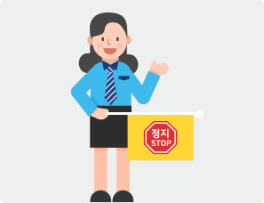
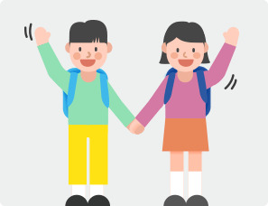
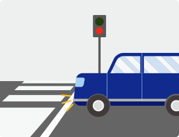
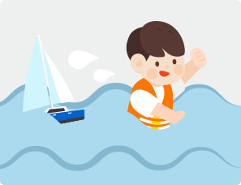

화재가 발생한 경우 외에는 부상자를 건드리지 맙시다. - 구조대의 활동이 본격적으로 시작되면 구조에 참여하지 말고 사고 현장에서 물러나야 합니다.
사고현장에서는 유류나 가스가 누출되어 화재가 발생할 위험성이 있으니 담배를 피우지 맙시다.
지하철전동차 화재가 발생했을 때에는
노약자·장애인석 옆에 있는 비상버튼을 눌러 승무원과 연락합시다. - 객차마다 2개씩 비치된 소화기를 이용하여 불을 꺼야 합니다.
화재가 발생한 경우 외에는 부상자를 건드리지 맙시다. - 구조대의 활동이 본격적으로 시작되면 구조에 참여하지 말고 사고 현장에서 물러나야 합니다.
출입문이 열리지 않으면 비상용 망치를 이용하여 유리창을 깨야 합니다. 망치가 없으면 소화기를 이용하여 유리창을 깨야 합니다.
코와 입을 손수건이나 티슈로 막고 비상구로 신속히 대피하되, 뛰면 위험하므로 걸어서 대피합시다.
정전 시에는 유도등을 따라 출구로 나가고, 유도등이 보이지 않을 때는 시각장애인용 보도블록을 따라 가거나 벽을 짚으면서 대피합시다.
지상으로 대피가 여의치 않을 때에는 대피요원의 안내에 따라 철로를 이용하여 대피합시다. - 가능하다면 소화전을 이용 불을 꺼야합니다.
자동차가 물속에 빠졌을 때에는
물에 뜨는 물건이 주위에 있으면 움켜쥐고 출입문을 통해 빠져나오거나, 망치를 이용해 유리창을 깨고 탈출해야 합니다.
바로 탈출하지 못한 경우에는 차내에 물이 어느 정도 들어와 수압 차이가 없어져 출입문을 열수 있을 때까지 침착하게 기다렸다가 탈출합시다.
차에서 나오기 전에 3~4회 심호흡을 하고 숨을 크게 들이 쉰 다음 숨을 멈추고 나오면 물속에서 더 오래 견딜 수 있습니다.
교통사고 예방요령위험물질 수송차량 사고시 사고지점에서 빠져 나와 대피해야 합니다.
화재가 발생한 경우 외에는 부상자를 건드리지 말아야 합니다.
자동차 사고에 이렇게 대비합니다.


안전한 도로횡단을 위해서는
우선 멈추어 좌우를 살피는 습관을 가져야 합니다.
횡단보도가 아닌 곳을 무단으로 횡단하는 일은 금해야 합니다.
횡단보도에서 신호가 바뀌더라도 차량의 진행유무를 반드시 확인합시다.
어린이나 노약자는 보호자와 함께 건너야 합니다.
처음부터 건너기 시작한 사람이 아니면, 파란신호가 끝나지 않았더라도 건너지 않아야 합니다.
신호등이 없거나 점멸신호가 있는 횡단보도에서는 차량이 완전히 멈추었거나 운전자의 수신호가 있을 때 건너도록 합시다.
운전자는 사람이 내리고 있는 차량 옆으로 지나가거나 추월하지 않도록 해야 합니다.
차에서 내리는 사람은 지나가는 자전거, 오토바이, 차량에 주의해야 합니다.
안전한 도로보행을 위해서는
사람은 인도로 다니고 차는 차도로 다녀야 합니다.
인도와 차도가 구분이 안 된 도로의 경우에는 '길 가장자리' 즉 한쪽으로 다니도록 합시다.
운동은 운동장이나 놀이터와 같은 안전한 장소에서 해야 합니다.
비가 오는 날에 우산을 숙여 쓰면 앞을 살필 수 없으니 똑바로 쓰고 차도에서 떨어진 길의 가장자리로 걷도록 합시다.
운전자의 눈에 잘 띄게 하기 위해 밝은 색 옷을 입어야 합니다.
좁은 길이나 골목길에서 넓은 도로로 나올 때에는 아무리 급한 일이 있더라도 일단 멈추어 서서 좌우를 잘 확인하고 나서야 합니다.
철도 사고에 이렇게 대비합니다.


자동차 운전자가 건널목을 통과 할 때
건널목을 통과할 때에는 반드시 일시정지 후, 좌·우 방향의 열차운행 여부를 확인합시다.
경보종이 울리거나 차단기가 하강 중일 때는 건널목으로 진입하지 맙시다.
앞차가 건널목을 완전히 빠져나가기 전에 건널목으로 진입하지 않도록 해야 합니다.
건널목에서 차가 멈추면, 자동변속기 차량은 기어를 중립에 놓고 차를 밀고 수동변속기 차량은 기어를 1단에 놓고 클러치를 밟지 않은 상태에서 키로 시동모터를 돌리면 차를 움직일 수 있습니다.
차량을 밀어야 할 때에는 여러 사람이 도와주도록 합시다.
철도안전을 위해서는
철길이 파손되었거나 선로에 큰 돌 등이 떨어져 있는 것을 발견하면 즉시 신고(080-850-4982, 1544-7788, 119, 112)해 주세요.
철길(교량, 터널 등)로 다니지 맙시다. - 건널목을 건널 때에는 일시정지 후 반드시 좌·우를 확인하고 횡단합시다.
철길 가까이에서 어린이들이 놀거나 가축을 풀어 놓지 맙시다.
항공기 사고에 이렇게 대비합니다.
비상상황 발생 시에는
비행 전 승무원의 브리핑에 귀를 기울여주시고 상황발생시 승무원의 안내에 따라야 합니다.
어린이나 노약자(환자)를 위한 별도의 비상장비가 있는지 승무원에게 문의합시다.
비행 중 비상용 산소마스크가 내려올 경우에는 보호자가 먼저 마스크를 착용하고 어린이나 노약자를 도와주어야 합니다.
비상탈출용 슬라이드 이용 시, 굽이 높은 구두나 모서리가 날카로운 장신구와 소지품을 기내에 남겨두고 탈출합시다.
충돌 전 좌석등받이를 앞으로 세우고 안전벨트를 착용한 후 부상을 최소화할 수 있는 자세를 취합시다.
항공기 여행 시 주의사항
기내 수화물은 유사시 신속한 탈출에 방해되지 않도록 지정된 부피와 무게를 준수합시다.
복장은 유사시 화상을 방지하기 위해 가급적 합성 소재가 아닌 면과 같은 천연소재 의류를 이용합시다.
난기류 등에 의한 기체 요동에 대비하여 비행 중 좌석에서는 항상 안전벨트를 착용합시다.
만일 어린이나 노약자에게 비행 중 발생 가능한 신체·의학적 문제가 있다면 항공사 직원이나 승무원에게 탑승 전에 반드시 주지시켜 주세요.
출발 전 배정된 좌석에 착석합시다. 배정된 좌석을 임의로 변경하는 것은 항공기의 비행에 문제를 야기할 수 있습니다.
항공기 사고에 이렇게 대비합니다.
비상상황 발생 시에는
비행 전 승무원의 브리핑에 귀를 기울여주시고 상황발생시 승무원의 안내에 따라야 합니다.
어린이나 노약자(환자)를 위한 별도의 비상장비가 있는지 승무원에게 문의합시다.
비행 중 비상용 산소마스크가 내려올 경우에는 보호자가 먼저 마스크를 착용하고 어린이나 노약자를 도와주어야 합니다.
비상탈출용 슬라이드 이용 시, 굽이 높은 구두나 모서리가 날카로운 장신구와 소지품을 기내에 남겨두고 탈출합시다.
충돌 전 좌석등받이를 앞으로 세우고 안전벨트를 착용한 후 부상을 최소화할 수 있는 자세를 취합시다.
항공기 여행 시 주의사항
기내 수화물은 유사시 신속한 탈출에 방해되지 않도록 지정된 부피와 무게를 준수합시다.
복장은 유사시 화상을 방지하기 위해 가급적 합성 소재가 아닌 면과 같은 천연소재 의류를 이용합시다.
난기류 등에 의한 기체 요동에 대비하여 비행 중 좌석에서는 항상 안전벨트를 착용합시다.
만일 어린이나 노약자에게 비행 중 발생 가능한 신체·의학적 문제가 있다면 항공사 직원이나 승무원에게 탑승 전에 반드시 주지시켜 주세요.
출발 전 배정된 좌석에 착석합시다. 배정된 좌석을 임의로 변경하는 것은 항공기의 비행에 문제를 야기할 수 있습니다.
[안전 개꿀팁] 위험한 스몸비족! 안전도 살피세요~
[PD] 안전개꿀팁 지금 시작할께요. [앤디] 안녕하십니까. 개꿀팁 안전보완관 앤디입니다. 요즘 길거리에 스몸비족이 등장해 안전사고가 늘었다고 하죠? 도대체 스몸비족이 뭐길래 우리의 안전을 위협하고 있을까요? 준비된 영상 보시죠. [나레이션] 지금 길거리에 눈뜨고도 앞을 못보는 사람들이 너무나 많습니다. 언제 넘어지고 부딛혀 다칠지 몰라 불안한데요. 스마트폰 보행이 얼마나 위험한지 이어서 계속 보시겠습니다. 스마트폰을 사용하면 시야폭이 감소되어 주위를 잘 볼 수 없는데요. 최근 스마트폰 보행자 교통사고가 증가하고 있다고 합니다. 보행중 스마트폰을 사용하면 시야폭이 무려 56%가 감소된다고 합니다. [PD] 화면 넘어왔어요. [앤디] 아이고. 음음음. 위험천만 스몸비족. 안되겠죠? 안전한 보행방법 알아보겠습니다. [나레이션] 안전수칙 첫번째. 골목길을 건널때는 주위를 살펴주세요. 안전수칙 두번째. 보행중에는 스마트폰을 자제해주세요. [앤디] 보행안전, 조금만 신경쓰면 어렵지 않죠? 순간의 주의가 일상의 안전을 좌우합니다. 다음 시간도 앤디의 개꿀팁 놓치지 마세요.
4월에 가장 많이 발생하는 졸음운전의 대처법
[이충현 안부남] 여러분 안녕하십니까? 생활밀착형 주제로 여러분과 소통하는 고품격 안전방송 안전을 부탁해. 안부남 이충현입니다. 오늘 요즘같은 시기에 가장 자주 발생하는 졸음운전 사고에 대해서 도로교통공단 대전충남지부의 이경은 교수와 함께 알아보도록 하겠습니다. 안녕하십니까? [이경은 교수] 안녕하세요. 도로교통공단 이경은 교수입니다. [이충현 안부남] 네. 많은 훈련과 교육을 담당하고 계시는데 완연한 봄이 됐습니다. 그러다보니까 낮에 운전하다보면 나도 모르게 꾸벅꾸벅, 어느 순간 상상의 나래 속으로 빠져있는 이런 경험을 하게 됩니다. 근데 저만 그런건지 궁금하긴 합니다. [이경은 교수] 실제로 안부남은 경험을 해보셨다는 얘기죠? [이충현 안부남] 저는 그냥 운전하다보면 상상이 되요. 그래서 어느 순간 자고 있는거죠. 놀래서 깨죠. [이경은 교수] 맞습니다. 일반 운전자분들도 많이 공감하실 얘기를 해주셨을것 같아요. 특히 장거리 운전하실 때, 계속 집중만 하실 수는 없거든요. 우리는 로봇이 아니라 사람이기 때문이죠. 의식의 구조를 그래프로 그려보신다면 자연스러운 파동구조를 가질거에요. 그러니까 집중을 하시면 어느새 이완기가 찾아오고 다시 이완기를 거치면 집중을 하게 되는거죠. 운전중에도 이같은 의식의 파동구조를 갖게 됩니다. 이완기때 공백기가 찾아오고 졸음이 밀려온다면 운전 중에 끔찍한 사고가 발생할 수밖에 없죠. 2016년에 영동고속도로에서 발생했던 사고영상을 다시 보시면 졸음운전이 얼마나 위험한지 다시 느끼게 되실것 같습니다. [이충현 안부남] 네 지금 영상이 나오고 있죠. 2016년 7월 17일 영동고속도로 인천방향 봉평터널 입구인데요. 와~. 5중추돌이었을거에요 아마. 정말 졸음운전이 그만큼 무섭다는게 다시한번 느껴지는데 그렇다면 실제로 졸음운전은 언제 자주 발생하는지 상당히 궁금합니다. [이경은 교수] 4월이 졸음운전 사고가 가장 많이 발생하는 달로 보입니다. 안전을 부탁해에서 4월 방송주제를 택하신 이유가 정확히 있으신거죠. 한 언론보도에 따르면 고속도로에서 졸음운전의 치사율, 그러니까 교통사고 100건당 사망자수를 보면 졸음운전 사고의 치사율이 18.5명이에요. [이충현 안부남] 19명 봐야겠네요. [이경은 교수] 그렇죠. 약 19명 정도의 치사율을 가지고 있는데 과속사고를 비교해보시면 과속사고 치사율의 2배가 넘는 수치입니다. 그만큼 상당히 위험하다는 얘기고 시간대를 보시면 오후 2시에서 4시에 사고가 집중되어 있어요. 이 시간대에 사고 치사율은 평균의 4.9배 이상에 달하고 있습니다. [이충현 안부남] 와, 그러니까 조금 정리를 한번 해볼께요. 봄철에 특히, 4월달에 졸음운전이 상당히 많이 일어나는데 과속으로 인한 사고보다 치사율이 배 이상 높다. 그리고 시간대로 보면 오후 2시에서 4시 사이에 집중되고 있다. 이거 정말 매우 위험한 시간이다 생각이 들긴 하거든요. [이경은 교수] 예 맞습니다. 제가 강의를 하면서 만나게된 사고사례를 통해서 체감하는 통계치는 사실 훨씬 더 크거든요. 왜냐면 졸음운전으로 사고가 나도 통계 자체가 잡히지 않는 경우가 훨씬 많습니다. 졸음운전이라는 것을 운전자가 인정하지 않고는 근거를 찾기가 매우 어려울거고 졸음운전을 통해서 이어지는 신호위반 혹은 중앙선 침범사고가 나는 경우면 졸음운전이라는 원인으로 밝혀보기가 쉽지 않기 때문에 통계를 넘어서는 훨씬 더 많은 졸음운전사고가 매년 발생하고 있다고 말씀드려도 과언은 아닐것 같습니다. [이충현 안부남] 그렇군요. 앞에서도 쭉 얘기했지만 졸음운전의 위험성을 얘기한다. 조금 더 어느정도까지 위험하다고 볼 수 있는건가요? [이경은 교수] 일단은 졸음운전으로 인한 사고의 심각성은 나 하나의 피해로 끝나지 않는다는데 있습니다. 주변에 다 피해를 주는 형태의 사고가 발생할 수 밖에 없거든요. 전도, 전복, 혹은 추돌로 이어지는데 고속도로에서 발생하게 된다면 대형사고 가능성이 훨씬 높아지죠. 그냥 앞차만 들이받는게 아니고 신호위반, 중앙성침범으로 이어진다는 것입니다. 준비된 영상을 보시면서 이야기 나누실까요? [이충현 안부남] 네. 지금 차가 달리고 있어요. 정상적인 주행을 하는 모습이지만. 어. 순간 존거에요 저거는. [이경은 교수] 맞습니다. 영상을 보시면 차로를 갑자기 이탈하면서 사고에 이르게 되죠. [이충현 안부남] 상당히. 또 있어요 지금. 이건 뭐죠? 헉? [이경은 교수] 방금 보신 사례는 중앙선을 넘게 되었던 경우로 보이고요. 지금 역시 졸음으로 인해서 차로를 이탈하고 주변사람에 피해를 입히는 경우입니다. [이충현 안부남] 사고가 나는 그 순간까지도 모른거에요. 그쵸? [이경은 교수] 맞습니다. 여기서 또 하나의 특징이 나오죠. 졸음운전 사고의 특징은 사고 직전까지 운전자가 인식하지 못하고 일어나기 때문에 브레이크를 밟지 않습니다. 충격력이 훨씬 크죠. 좀 전에 보신 영상들 속에서도 차량들이 휘청휘청 차로를 이탈하기 직전까지 중앙선을 넘어서기 전까지 브레이크를 사용하지 않을것 같습니다. 제동등이 켜지지 않고 있거든요. 브레이크를 아예 밟지 않고 사고가 난다는건 그만큼 치사율이 높은 사고로 예상을 해볼 수 있을거같고요. 흔히 음주운전과 졸음운전 사고를 참 많이 비교를 하는데 음주운전 역시 참 위험합니다. 음주운전도 참 위험하지만 졸음운전이 더 위험하다고 말씀을 드리고 싶어요. 깜빡 2~3초만 졸았다고 가정을 해보셔도 고속도로에서 눈을 감고 약 100미터를 가는 꼴이거든요. 제가 안부남께 한가지 질문을 드리고 싶어요. 혹시 제가 100만원을 드릴테니까 고속도로에서, 얼굴이 갑자기 밝아지셨는데요. [이충현 안부남] 돈준다면 좋아해서 하하. [이경은 교수] 고속도로에서 딱 3초만 눈감고. [이충현 안부남] 에이 그걸 누가해요. 안해요. 그걸 왜 해요. 가족도 있고 갈 길이 구만리인데. [이경은 교수] 맞아요. 고속도로에서 3초를 눈을 감는다는건 내 생명을 담보로 하는 선택이거든요. 졸음운전이 그같은 선택입니다. 3초라는 시간은 속도를 가진 차량에게 사고가 발생하기에 충분히 긴 시간이고 사고 직후 제동하지 않은 상태의 결과는 상상해보셨을 때 얼마나 큰 사고로 이어질지 가늠이 되죠. [이충현 안부남] 그렇습니다. 정말 나와 내 주변의 목숨까지 위협할 수 있는게 바로 이 졸음운전입니다. 철저한 예방법이 가장 중요한 또 하나의 대책이 아닐까 싶긴한데 사람들마다 여러가지 노하우를 갖고 있을거같긴한데 주로 어떤 방법들 있습니까? [이경은 교수] 네. 일단은 정말 이게 일상에 밀접한 현상이기때문에 사람들마다 안부남도 마찬가지고 지금 방송 보시는 분들도 아마 나름의 졸음운전 예방책을 가지고 계실거에요. 같이 정리를 해보면 일단 원인은 결국 피로운전입니다. 봄철, 왜 4월에 집중이되느냐라고 봤을 때 춘곤증과 더불어서 오후 2시~4시에 집중되는 이유, 식곤증과 더불어서 피로함이 가중된다는 얘기거든요. 그래서 일단 첫번째로 장시간 운전하시기 전에는 미리 휴식을 취하셔서 컨디션을 조절해주실 필요가 있겠어요. 운전을 하시다가 하품을 기준삼아주셨으면 좋겠어요. 첫번째로 하품을 하셨다. 이 때는 알고계셨던, 그동안 써오셨던 다양한 방법을 써보시는겁니다. 안부남 어떤방법 써보셨나요? [이충현 안부남] 저는요 차에 탈 때 장거리 간다 그러면 좀 졸릴거같으면 이에 많이 끼는 음식을 하나 사요. 굉장히 뻑뻑한 과자라든지 아니면 딱딱한 음식을 계속 집어넣습니다. 잇몸에 햄스터처럼. 씹고 가는데 그래도 어느순간 자고 있어요. [이경은 교수] 일단 뭔가 먹는다, 씹는다, 껌을 씹는다, 사탕을 먹는다. 이런 얘기 많이 하시고 또, 노래를 크게 부른다, 음악을 크게 틀어본다 이런 말도 많이 하시거든요. 아마 직접 경험을 통해서 느끼시는 '난 이렇게 하면 잠이 깨더라고요.'라는 부분이 분명히 있으실거에요. 첫번째 하품에는 그 가지고 계신 방법을 다 써보시는겁니다. 그렇게해서 계속 주행을 하시다가 두번째로 또 하품이 나왔다. 이 때는 단호하게 결정을 내려주실때라고 저는 생각을 해요. 만약에 이 때에도 내가 알고 있는 방법으로 내가 의지로 참아낼 수 있다라고 생각하고 계속 운전하고 계시면 세번째 하품을 하시는 순간이 사고가 일어나는 순간이라고 보실 수 있을거 같거든요. 그래서 운전하시다가 두번째로 하품이 나왔다. 이때부터는 중간중간 졸음쉼터를 들러주시거나 휴게소를 통해서 휴식을 취해주시고 다시 운전을 해주실 필요가 있겠어요. [이충현 안부남] 네 맞습니다. 정말 유용한 팁이 아닐 수 없습니다. 하품을 기준으로 해서 첫번째 하품에는 인지를 했으니까 환기도 시켜보기도 하고 자신 나름의 불편한 방법을 동원해보고 아까 김유신님 혼자말 하신다고 하셨는데 혼자말도 좀 하고 그 다음에 두번째 그래도 하품이 나왔어요. 그러면 휴게실로 바로. [이경은 교수] 그렇죠. 이제는 더 이상은 여지 없이 무조건 쉬셔야된다는 단호한 결정이 필요하고 마지막 세번째 휴식은 휴식하시면 안되는 분을 짚어보려고 해요. 차 안에서 휴식하시면 안되는 사람 누굴까요? [이충현 안부남] 만약에 저 혼자 가면 본인이겠지만 옆에 누구 있으면 동승한 옆에 앉아계시는 동승자. [이경은 교수] 맞습니다. 조수석에 탄 옆사람. 옆사람이 졸게되면 운전자가 훨씬 더 크게 영향을 받는다는 점 짚어드리고 싶었어요. 조수석이라는 단어의 의미를 한번 잘 새겨주시고 차에 탑승하시는 순간에 모두가 운명공동체가 되지 않겠습니까. [이충현 안부남] 운명공동체. [이경은 교수] 그렇죠. 물도 건네주시고 말씀도 건네주시면서 함께 이 봄에 춘곤증을 이겨낼 수 있도록 도움의 역할을 꼭 해주실 필요가 있겠습니다. [이충현 안부남] 맞습니다. 저도 다니다보니까 옆에서 까서 먹여주면서 잔소리도 괜찮아요. 자꾸 신경을 쓰이게 해놓으면 안졸게 되어있어요. 어느 순간 목적지 근처에 오게 되고요. 가까워지면 마음이 도달할 때가 됐으니까 정신이 맑아지잖아요. 다음을 생각해야되니까. 그래서 옆에 계신 분들이 자꾸 까서 먹여주기도 하고 말도 걸고 이런거 참 좋았던거같다는 생각이 들어요. 또 다른 방법들도 있죠? [이경은 교수] 졸음을 예방하기 위해서 환기가 중요하다라는거 다 알고 계셨죠? 환기를 정말 자주 시켜주셔야할 필요가 있어요. 외부의 신선한 공기와 실내공기를 순환시켜주시는거 우리의 졸음의 예방책이 분명히 됩니다. [이충현 안부남] 그런데보면 요즘에 미세먼지가 심각합니다. 집에서도 환기 안하는데 달리는 차에서 도로에서 매연 맡아가면서 환기시킬리가 있겠습니까라는 생각을 저도 하게 되거든요. [이경은 교수] 맞습니다. 저 역시도 비슷한 생각을 차 속에서 한 적이 있었는데요. 요즘 주변에서 이런 말씀하시는 경우 정말 많이 듣게 되요. 물론 미세먼지도 위험합니다. 하지만 통계적으로 미세먼지로 사망할 확률보다 졸음운전의 위험성이 훨씬 더 높다는데는 모든 분들이 공감하시지 않을까 싶습니다. [이충현 안부남] 그럼요. 내가 죽게 생겼는데 그리고 나뿐이 아닙니다. 내가 또 누군가가 가족중에 구성원의 한 분이 가심으로 인해서 남아있는 가족들의 아픔은 정말 이루 말할 수가 없거든요. 목숨과 연결되는거잖아요. [이경은 교수] 맞습니다. 교통사고는 사망자뿐만 아니라 남겨진 가족들이 짊어지게되는 슬픔을 감히 말로 표현할 수 없는 부분이 될거구요. 가해자 역시 본인이 그 사고의 가해자가 됐다라는것 원치않는 결과거든요. 모두가 끔찍한 결과를 감당해야되는 일이라고 생각을 합니다. [이충현 안부남] 사실 또 우리 주변에 교통사고 일으키는 원인들이 다양하게 많이 있습니다. 그 중에 보면 고쳐지지 않고 계속 반복적으로 습관적으로 하게 되는 안전무시 관행들이 있거든요. 교통안전법규 관련해서 어떤 것들 무시관행으로 볼 수 있을까요? [이경은 교수] 다양한 법규들이 있을거에요. 제가 강의를 하면서 교통사고가 언제 발생하는지 왜 발생하는지를 봤을 때, 강의하는 사람으로 이렇게 말씀드리기는 좀 그렇지만 위반을 만약에 하시더라도 위반을 하신다라는 것을 주변에 분명하게 알리거나 소통을 하면 상대방이 방어를 할 여지가 생기거든요. [이충현 안부남] 위반하는 자체를 알려라? [이경은 교수] 그러니까 위반을 하시라고 드리는 말씀은 절대 아니에요. 오해하시면 안되고 내가 갑자기 차로를 바꿔야한다, 갑자기 이동을 하려고 한다고 했을 때 주변차량이 약속과 벗어난 행동을 하는걸 예상치 못하기 때문에 사고가 발생한다고 봤을 때 우리가 알린다는거, 소통을 한다라는게 가장 중요하다는 방점이 찍혀요. 그리고 운전하시다가 위반이 아니더라도 실수를 하시는 순간이 분명히 있거든요. 실수 자체를 최소화하는게 물론 중요하겠지만 이미 실수를 하셨다라면 이 실수를 주변에 알려야한다라는거에요. 소통을 하셔서 위험한 상황을 막아야한다는 얘긴데. [이충현 안부남] 차 안에서 '아~~! 나 위반! 나 지금 급해서 갑자기 방향을 바꿀거에요!' 이건 안되잖아요. [이경은 교수] 현실적으로 차 안에서 소리를 질러서 소통을 할 수는 없는 노릇이에요. 그러면 어떻게 하셔야될까요? [이충현 안부남] 깜빡이? 방향지시등이라고 얘기하죠? [이경은 교수] 정식 표현은 방향지시등. 방향지시등을 사용해주시는게 바로 소통의 역할을 해준다라는 생각을 저도 합니다. 방향지시등을 켜는 것이 사소한 선택이지만 사용을 하심으로써 약속대로 움직일지라도 한번 더 강조하는 효과가 있어요. 주변에 한번 더 알리는거 사고를 줄이는 확실한 길이 되기때문에 결코 아깝지 않은 일이라고 생각을 해보고요. 상담을 해봤을 때 결국은 이렇게 공식이 나와요. 두가지 조건이 만나는 공식인데요. 첫번째 조건은 '나'라는 조건입니다. 내가 무언가를 위반했거나 무언가를 실수했거나 약속과 다른 행동을 보일 때에요. 그런데 이 한가지 조건으로는 부족한데요. 이 순간에 또다른 누군가가 마찬가지로 무언가 나의 경험치와 나의 사정때문에 약속을 벗어나는 어떤 조건을 만들어낼 때, 그리고 이 두 조건이 만날 때, 그 때 사고가 나거든요. [이충현 안부남] 그러니까 사고가 다발적으로 자주 일어날 수 없지만 그런 상황에서 사고가 난다고하면 상당히 큰 결과로 이어질수 밖에 없는거네요. [이경은 교수] 맞습니다. 물론 내가 잘 지키고 상대방이 잘 지켜도 누군가의 위반으로 사고는 발생을 해요. 그런데 큰 교통사고들, 대형교통사고들은 결국 두 사람의 아슬아슬한 조건이 맞닥들일 때이기 때문에 이 조건을 관리해주셔야되거든요. 이 공식, 어떻게 깨뜨릴 수 있냐면 일단 한 조건을 탈락시키시면 되요. 어떤 조건을 탈락시키시겠어요? [이충현 안부남] 잘 지켜야죠. 법규준수. [이경은 교수] 상대방이라는 조건을 우리가 소거할 수가 없어요. 상대방이 어떻게 운전할지 예상할 수가 없거든요. 상대방의 조건에 대해서는 어쩌면 최악의 상황을 염두에 두시는게 좋을거같아요. 최악의 상황을 염두하시고 운전하시는거를 방어운전이라고 생각하고 그러면 내가 통제할 수 있는 조건, 내가 소거할 수 있는 조건은 '나'라는 조건밖에는 없죠. 나의 조건을 통제한다는 얘기는 약속대로 움직이신다라는거고 주변이 내가 어떻게 움직일지 예상하도록 움직인다는 얘기에요. 그러면 그 때에 약속대로 움직이는 순간에도 방향지시등을 한번 더 켜놓으신다면 주변에서 훨씬 더 나를 예측하기 쉽기 때문에 분명히 사고예방하시는데 크게 도움이 될겁니다. [이충현 안부남] 결국은 소통이네요. [이경은 교수] 맞습니다. 어떻게 켜야될까요? 그럼. [이충현 안부남] 미리. 들어가기 전에 미리 켜야되는데 제가 방송하다보니까 확 올라오는게 생각이 나서. [이경은 교수] 말씀해보세요. [이충현 안부남] 일단 머리부터 넣잖아요. 그리고 막 브레이크를 밟아요. 차선변경하면 속도 내면서 들어가야되는거 아니에요? 그쵸? 그런데 방향 바꾸자마자 브레이크를 확 밟아요 갑자기. [이경은 교수] 급정거를. [이충현 안부남] 그러면 어떻게 어쩌라고 나는. 몇번 큰일날뻔 했습니다. 죄송해요 여러분. 물론 앞에 사정이 있었겠죠. 아는데 미리 신호를 하고 그 신호에 맞춰서 행동을 해주는게 상당히 중요하지않을까 생각해서. [이경은 교수] 맞아요. 말씀하신 그 내용에 아마 모두가 공감하고 모두가 분노하셨을거라고 제가 장담을 해요. 왜냐면 운전자의 분노상황 베스트3를 꼽으면 1위일거 같거든요. 갑자기 끼어드는 차량. 그 차량의 특징은 방향지시등을 켜지 않습니다. 비좁은 곳에 갑자기 들어오는 차량에 모두가 깜짝 놀람을 넘어서 사실 화를 분노를 느끼잖아요. 그러면 방향지시등을 어떻게 켜는게 올바른 사용이냐라고 봤을 때 도로교통법에서 이렇게 얘기합니다. 일반도로에서는 진로를 변경하시기 전에 30미터 전에 켜셔야한다 얘기를 하고 고속도로에서는 100미터 전에 방향지시등을 사용해서 주변에 알리도록 하고 있는데 거리를 기준삼으시는 것도 좋지만 시간을 기준삼으시는것도 좋습니다. 조금 더 여유있게 시간으로 치면 방향전환 하시거나 진로변경 하시기 전에 3초 전에 켜시는게 좋아요. 3초 전에 켜시고 켠 즉시 방향을 바꿀 수 있다고 생각지 마시고 노크개념과 같거든요. 화장실에 들어가신다고 생각을 한번 해보세요. 화장실 문앞에서 노크를 '똑똑' 하셨을때 '나 지금 들어갈겁니다. 똑똑'하시는게 아니라 '지금 들어가도 될까요?'하고 물어보는게 노크의 개념이잖아요. 방향지시등도 사실 같아요. 방향지시등을 켜심과 동시에 들어가시는게 아니라 켜놓고 상대방의 반응을 확인하는거죠. [이충현 안부남] 화장실로 비유하시니까 갑자기 생각이 나네요. 진짜 그러네요. 똑똑하자마자 확 열면 상당히 난감하잖아요. [이경은 교수] 화장실에서는 난감할 일이지만 도로에서는 이게 더 달라지죠. [이충현 안부남] 사고로 이어지니까. [이경은 교수] 그래서 노크개념으로 생각을 해주시면 좋겠어요. 미리 켜시고 상대방의 반응을 확인하시고 그 다음에 이동하시는거죠. 이렇게 말로 해서 말씀을 드리기보다는 실제로 영상을 확인하는게 어떨까 싶어요. [이충현 안부남] 준비를 하셨군요. [이경은 교수] 올바른 방향지시등의 사용을 한번 살펴보도록 하죠. [이충현 안부남] 사고영상만 보다보니까 또 사고날거 같아서요. [이경은 교수] 오른쪽에서 접근하고 있는 차량을 한번 잘 보십시오. 방향지시등을 켰고요. 양보를 구하고 다시 들어옵니다. [이충현 안부남] 오. 감사합니다. 땡큐등 들어왔어요. [이경은 교수] 다시 재차 켜시고 또 여유를 두고 양보를 받은 후에. [이충현 안부남] 또 땡큐. 와 이 분 매너 대단히 좋으시네요. [이경은 교수] 잠깐의 시간이었지만 도로에서 저기 계섰던 운전자분들께서 소통과 배려를 하셨다는 느낌이 드는데요. 어렵지않은 방법인데 우리가 그 소통과 배려를 무시하는 관행이 문제라는 생각이 들어요. 잠깐이지만 소통을 위해서 깜빡깜빡. 방향지시등을 꼭 사용을 해주시고 양보를 받았을 때는 비상등 사용해서 '고맙습니다.' 다시 한번 소통과 배려를 해주시는거 이 것이 졸음운전 예방에 가장 좋은 팁이자 전체적인 교통사고 예방에 좋은 팁이라고 생각을 하고 마지막으로 말씀을 드리고 싶은것은 우리의 인식이 변화할 필요가 있다는 생각을 해봐요. 제가 아까 음주운전과 졸음운전을 비교해드렸었는데 안부남께서는 혹시 결혼하셨습니까? [이충현 안부남] 그럼요. [이경은 교수] 아드님 혹시 있나요? [이충현 안부남] 있죠. [이경은 교수] 그러신가요. 여쭈어만봐도 이렇게 얼굴이 밝아지시는데 예쁜 아드님 계실거같은데 혹시 아드님이 어른이 되서 성장한 후에 '아버지. 제가 지금 솔직히 소주를 몇 잔 마셨거든요. 그런데 지금 운전을 해야될거같은데 운전을 해도 될까요?' [이충현 안부남] 절대 안되죠. 어디 큰일날 소리를! 아빠가 대리운전 보내줄께. 기다려. 위치가 어디야? 좌표 찍어. 이거죠 저는. [이경은 교수] 그쵸. 깜짝 놀라게 되요. 절대 안된다 우리가 절대 안된다 바로 말해주게 될텐데 또 다른 날이에요. '아버지. 제가 지금 계속 무리를 했더니 너무나 피곤해요. 그런데 지금 운전을 하긴 해야되거든요. 운전을 해도 될까요?' 이렇게 물었다면 뭐라고 얘기해주시겠어요? [이충현 안부남] 자고와. 잠깐이라도 의자 젖히고 자고와. 안돼. 오지마. [이경은 교수] 역시 오늘 말씀 잘 나눠주신 효과가 확실히 있네요. 그런데 보통 저 피곤한데 운전해도 될까요를 우리가 정말 사랑하는 가족이 누군가가 나한테 물어본다면 이렇게 조언하게 되는거 같아요. '그러면 커피도 한잔 마시고 휴식을 좀 취하고 운전을 해라. 조심스럽게 해봐라.' 이렇게 조언을 하게 되는데 아까전에 안부남이 해주신게 정답이에요. 음주운전과 졸음운전의 무게는 똑같습니다. 아니 어쩌면 졸음운전의 무게가 더 무겁거든요. 피로할 때, 졸음이 밀려올 때 운전을 전혀 하지않으셔야한다는 의식의 변화. 졸음운전은 정말 위험한 위반입니다. [이충현 안부남] 맞습니다. 카페인음료 드시고 버티면서 운전하신다는 분들 계시는데 정말 가족과 생계를 위해서 그러시면 안되겠고 푹 쉬고 운전하는거 중요하겠습니다. 앞으로도 좋은 기회에 또 찾아??으면 또 찾아오셨으면 하는 생각을 가져보겠습니다. 자 그럼 다음 안전을 부탁해로 다시 찾아뵙도록 하겠습니다. 인사하셔야되요. 안부하시면 됩니다. 안전을 부탁해. 다음 시간을 기대해주세요. 안부! [이경은 교수] 안부!
사람이 우선입니다(고속도로 2차 사고예방 캠페인 애니메이션)
고속도로에서 사고가 나셨다고요? 그럼 절대 이러지 마세요. 사고현장이 아무리 신경쓰여도 안돼요. 차의 상태가 아무리 궁금해도 안돼요. 차 안에 계속 계시면 절대 안돼요. 비상등 켜고 트렁크 열고 빨리빨리 안전한 곳으로 대피하세요. 차가 움직이지 않아도 안전한 곳으로 대피하세요. 고속도로에서도 차보다 사람이 우선이에요.
교통안전을 위한 방어보행 3원칙 잊지마세요~
안전한 보행을 위한 약속! 방어보행 3가지 원칙을 확인해볼까요? 서다! 횡단보도 앞에서 신호를 기다릴 땐 한 발 뒤로 물러서 섭니다. 보다! 초록불이 들어오면 좌우를 먼저 살펴야 하고 걷다! 횡단보도는 뛰지 않고 천천히 건넙니다. 그리고 무단횡단은 절대 금지! 알고 계시죠? 교통안전을 위한 방어보행 3원칙 잊지 마세요~
[동우의 체험 얼라이브] 자동차 안전벨트의 중요성
[신동우] 안녕하세요~! 대한민국의 안전과 행복을 책임지는 안전한 TV MC, 신동우입니다. 지난 시간 저와 처음으로 함께한 체험 얼라이브 어떠셨나요? 저는 난생 처음 몸으로 직접 느껴본 안전체험의 느낌이 계속 떠올라서 이 시간이 굉장히 기다려 졌었는데요, 오늘도 생생한 체험을 통해 여러분에게 꼭 필요한 다양한 안전정보를 드릴 수 있도록 최선을 다하겠습니다.
[신동우] 본격적인 체험을 시작하기 전에 오늘도 체험 얼라이브를 함께하기 위해 찾아온 친구들을 소개해 드릴게요. 세종시 종촌초등학교 3학년 친구들~ 안녕하세요~! [신동우] (종촌초 학생들 현장화면 보이면) 오늘도 체험 얼라이브 함께 즐겁게 만들어 주세요~! [신동우] 네~ 체험 얼라이브는 유 튜브 국민안전처 안전한TV 채널을 통해 실시간으로 함께 즐기실 수 있습니다. 방송을 보시다가 궁금한 점이나 꼭 하고 싶은 말이 있으면 유 튜브 라이브 채팅창에 남겨 주세요. 실시간 댓글 소개는 물론 안전에 대한 궁금증도 풀어드리도록 하겠습니다. [신동우] 자, 그럼 오늘도 생생한 체험을 통해 저와 여러분의 안전을 책임지고 이끌어 주실 선생님을 모셔볼게요. 오늘의 체험짱 선생님~ 나와 주세요~! [조수영] 안녕하세요. 오늘 신동우 씨 에게 생생하고 짜릿한 안전체험을 전해드릴 한국도로공사 교통안전팀 조수영입니다. [신동우] 반갑습니다. 그런데 어떤 생생하고 짜릿한 체험을 준비하셨나요? [조수영] 네, 오늘 전해드릴 체험은 바로 생명을 지키는 가장 쉽지만 또 가장 중요한 습관인 안전벨트 체험을 비롯한 자동차 안전체험입니다. [신동우] 안전벨트 체험이요? 안전벨트는 그냥 매면 되는 거 아닌가요? 굳이 체험까지 필요할까요...? [조수영] 많은 분들이 안전벨트를 매야 한다는 걸 알면서도 왜 매야하는지, 안전벨트가 정확히 어떻게 우리를 보호해 주는지, 또 어떻게 매야 하는지 제대로 모르는 분들이 많습니다. 뿐만 아니라 아직까지도 안전벨트를 착용하지 않는 분들이 여전히 많기 때문에, 오늘 체험 얼라이브 시간을 통해 안전벨트는 왜, 그리고 어떻게 착용해야 하는지를 생생하고 확실하게 보여드릴까 합니다. 오늘 이 시간, 정말 기대하셔도 좋습니다. [신동우] 에이~ 정말 기대해도 되나요, 선생님? [조수영] 그럼요! 체험 더 하게 해달라고 조를까봐 오히려 걱정입니다. [신동우] 우와~ 대체 어떤 체험이 기다리고 있길래 선생님이 이렇게 큰소리를 치시는지 정말 궁금하네요. 그럼 첫 번째 체험장으로 서둘러 가보겠습니다. 출발~! [신동우] 자~ 이제 첫 번째 체험을 하러 자리를 옮겼는데요, 선생님! 오늘 안전벨트 체험을 한다고 하셨는데 그럼 먼저 안전벨트는 과연 왜 꼭 착용해야 하는지 우리 친구들에게 쉽게 설명 좀 부탁드릴게요. [조수영] 네, 안전벨트는 우리가 자동차나 버스, 비행기, 기차 등을 타고 이동할 때 혹시라도 운행 중에 생기는 충격으로부터 우리 몸을 보호하고 몸을 고정시키기 위해 차 안 좌석마다 설치된 안전장치입니다. 그럼 왜 반드시 안전벨트를 착용해야 할까요? 그건 바로 안전벨트가 우리 목숨을 구할 수도 있는 생명벨트이기도 하기 때문입니다. [신동우] 안전벨트가 우리 목숨을 구한다구요? [조수영] 네. 조사에 따르면 교통사고 시 안전벨트를 매지 않은 사람은 안전벨트를 맨 사람보다 사망 위험률이 무려 12배나 높은 것으로 나왔습니다. [신동우] 12배 나요? 우와~ [조수영] 네. 물론 교통사고가 나면 다치거나 사망하는 여러 가지 원인이 있겠지만, 안전벨트의 착용 여부만으로도 우리 목숨을 구할 수 있는 가능성이 이렇게나 크게 차이가 납니다. 그러니 안전벨트는 곧 생명벨트라는 말이 과언이 아니겠죠! [신동우] 우와~ 안전벨트가 중요하다는 건 알고 있었지만 우리 안전에 이렇게까지 크기 영향을 미칠 줄은 몰랐네요. 그러면 이렇게 중요한 안전벨트, 과연 어떻게 착용해야 더 안전하게 우리의 생명을 지킬 수 있을까요? [조수영] 네. 평소에 안전벨트를 착용하실 때 답답하다고 느슨하게 착용하거나 아무렇게나 매는 분들 많으셨을 겁니다. 그런데 안전벨트도 제대로 착용하지 않으면 제 기능을 발휘할 수 없기 때문에 올바른 방법으로 착용하는 것이 무엇보다 중요합니다. 자, 그럼 제가 동우씨에게 직접 올바른 안전벨트 착용법을 알려드릴게요. 이 차에 한 번 타보시겠어요? [조수영] (안전벨트 올바른 착용법 설명) 네, 이렇게 차에 타면 가장 먼저 안전벨트를 매야 하는데요, 안전벨트를 맬 때는 이 띠가 배가 아니라, 어깨와 골반뼈를 지나는 곳에 위치하도록 착용해야 합니다. 특히 차 뒷 자석에 앉을 때 답답하다고 안전벨트를 아랫배 쪽에만 대충 둘러놓는 분들 많으시죠? 이렇게 하면 사고가 났을 때 복부에 충격이 강하게 가해지면서 자칫 장 파열이나 다른 부상을 입을 가능성이 높아집니다. 따라서 올바른 위치에 정확히 착용하는 것이 중요합니다. 또 한 가지, 안전벨트는 반드시 내 몸이 좌석에 밀착되게 누르는 느낌이 들도록 꽉 맞게 착용해야 합니다. 답답하다고 느슨하게 매는 분들도 많으실 거에요. 하지만 안전벨트를 느슨하게 착용하면 부상 위험이 무려 5배나 높아지기 때문에, 반드시 올바른 위치에 내 몸에 꽉 맞도록 착용하는 습관을 들이는 것이 좋겠죠! [신동우] 네, 안전벨트의 올바른 착용법에 대해 자세히 알려 주셨는데요, 선생님! 그런데 안전벨트는 앞좌석만 착용하면 되나요? [조수영] 아닙니다. 안전벨트는 전 좌석 모두 착용해야 합니다. 예전에는 도로에 따라 뒷좌석은 의무적으로 착용하지 않아도 되는 경우가 있었습니다만, 최근에 도로교통법이 개정되면서 이제는 모든 도로에서, 모든 차량의, 모든 탑승자가, 반드시 의무적으로 안전벨트를 매야합니다. 그럼 왜 전 좌석 착용이 필요한지 실험 영상을 통해 한 번 확인해 볼까요? [조수영] 자, 지금 화면 양쪽에 안전밸트를 착용 한 가족과 착용하지 않은 가족이 운행 중 충돌하는 모습을 시연하는 영상이 나오고 있는데요, 왼쪽에 안전밸트를 착용한 가족의 경우, 충돌 후 앞으로 크게 쏠렸다가 안전띠에 의해 다시 제자리로 돌아가지만, 오른쪽에 안전밸트를 착용하지 않은 가족의 경우 운전자는 핸들에 그대로 부딪히고, 뒷좌석의 아이까지 앞좌석 시트에 충돌 후 나뒹구는 모습을 볼 수 있습니다. [신동우] 우와~ 이렇게 실험 영상으로 비교해 보니까 안전밸트 전좌석 착용이 얼마나 중요한지 확~ 와 닿네요. [조수영] 그렇죠? 우리 체험 얼라이브 친구들은 안전벨트 착용을 의무라고 생각하지 마시고, 우리 안전과 생명을 지키는 당연한 습관이라고 생각하고 항상 차에 타면 가장 먼저 안전벨트부터 매는 것을 꼭 기억하시기 바랍니다. [신동우] 네~ 안전벨트의 중요성과 올바른 착용법까지 아주 자세하게 알아봤으니까, 이제 안전벨트를 착용했을 때와 착용하지 않았을 때 과연 어떤 차이가 있는지 직접 눈으로 확인해 볼 차례인데요.., 선생님, 지금 우리 뒤에 있는 이 차가 뭔지 설명 좀 해주세요. [조수영] 네. 이 뒤에 보이는 차량은 바로 직진 충돌 체험 차량입니다. 차를 타고 가다 갑자기 급정거를 하거나 혹은 다른 차량과 부딪혔을 때 어떤 느낌인지 체험해 볼 수 있는 시뮬레이터 차량입니다. 동우 군이 직접 타 보시겠어요? [신동우] 지금요? 아.. 아깐 굉장히 기다렸는데 막상 타려니 조금 떨리고 무섭기도 하고 그러네요. 저 안전한 거겠죠, 선생님?
[조수영] 걱정 마세요. 아주 안전하게 체험할 수 있도록 만들어진 시뮬레이터 차량이니까 걱정하지 않으셔도 됩니다. [신동우] 우와~ 직접 타니까 진짜 자동차 안에 탄 것 같아요. [조수영] 자, 자동차에 타면 제일 먼저 뭘 해야 한다고 했죠? [신동우] 아! 안전벨트요! 안전벨트를 매야죠! [조수영] 그렇죠! 조금 전에 제가 알려드린대로 한 번 매 보시겠어요? [신동우] 띠가 어깨와 골반뼈 위로 지나가게 하고, 의자와 몸이 밀착되도록 몸에 꽉 맞게 착용한다! 선생님, 저 제대로 잘 맸나요? [조수영] (밸트 당겨보며) 네, 아주 잘 맸네요. 그럼 이제 차를 출발 시킬텐데요, 우선 시속 10키로미터의 속도로 달리다가 차가 급정거 하게 될 겁니다. 느낌이 어떤지 한 번 체험해 보세요. [조수영] ( 동우 바라보며) 어떠세요? 지금 시속 10키로미터로 아주 천천히 가다 급정거를 했는데 느낌이 어때요? [신동우] 사실 시속 10키로라고 해서 별 느낌이 없을 줄 알았는데 급정거 하는 순간에 생각보다 앞으로 쏠리는 느낌이 강하게 들어서 좀 놀랐어요. 저도 모르게 안전벨트를 꽉 쥐게 되네요. [조수영] 자, 그럼 워밍업은 끝났으니까 이제 속도를 조금 더 높여볼까요? [신동우] 더요? 얼마나요? [조수영] 이번엔 시속 20키로 미터로 가다가 급정거를 할 텐데요, 보통 어린이 보호구역이나 일반 주택가 도로에서 주행할 때 30키로 미만으로 운행을 하게 되는데, 이때 만약에 급정거를 하거나 충돌하는 경우에 실제 어떤 정도의 충격이 있는지 직접 느껴보실 수 있을 거에요. 지금 안전밸트도 잘 맸고 부상 걱정은 없으니 너무 겁먹지 마세요! 자, 시작합니다. [신동우] 우와~ 선생님! 20키로는 정말 충격이 더 크게 다가오네요. 몸도 앞으로 더 많이 쏠리는 것 같아요. [조수영] 네, 그렇죠. 자동차가 급정거 할 때 아무리 느린 속도로 운행중이라 하더라도 충격은 생각보다 큽니다. 특히 지금은 급정거를 했지만 만약 앞에서 오는 차량과 부딪히는 사고가 난다면 앞에서 달려오는 힘이 가중되기 때문에 지금보다 훨씬 더 큰 충격을 받게 되겠죠. 자, 그럼 이제 안전밸트를 착용하지 않았을 땐 과연 어떤 지 한 번 더 체험해 볼까요? [신동우] 안전밸트를 빼구요? 으으~ 무서운데... [조수영] 너무 걱정마세요. 시속 10키로미터로 아주 천천히 움직일 거니까 너무 겁먹지 않으셔도 되요. 어린이들도 많이들 체험해 보는데요~ [신동우] 으으~ 그럼 살살해 주세요. [조수영] 동우 씨, 안전밸트를 매지 않은 상태에서 급정거 체험을 해보니 어떠세요? [신동우] 깜짝 놀랐어요. 밸트 안 매니까 차가 갑자기 딱~ 하고 섰을 때 몸이 앞으로 훅~ 쏠리더라구요. 밸트를 매고 있을 땐 그나마 밸트가 내 몸을 잡아줘서 정말 이 밸트가 나를 보호해주고 있구나 하는 느낌이 들었는데, 안전밸트를 안하고 있으니까 몸이 막 자기 맘대로 순식간에 앞으로 나가더라구요. [조수영] 안전밸트가 얼마나 중요한 지 직접 체험해 보니까 확실하게 아시겠죠? [신동우] 네. 정말 안전밸트의 소중함이 마구 느껴지더라구요. 자, 그럼 지금까지 시간 여러분은 어떻게 보고 계신지 라이브 채팅창을 한 번 확인해 보겠습니다. [신동우] 이렇게 재미있고 다양한 댓글들이 올라오고 있는데요, 남은 시간도 계속 함께해 주세요. [신동우] 자, 선생님. 다음은 어떤 체험이 기다리고 있나요? [조수영] 네. 다음은 복합 회전 충돌 체험입니다. [신동우] 복합 회전 충돌이요? [조수영] (이동하며) 네, 바로 저 뒤쪽에 있는 것이 바로 복합회전충돌 체험용 시뮬레이터 차량인데요, 저 차량은 차가 대각선 아래로 내려가면서 돌아가도록 만들어졌습니다. 조금 전에 실험 영상으로 본 차가 전복되는 상황을 간접적으로나마 체험해 볼 수 있겠죠. [신동우] 이건 높이 올라가 있네요? [조수영] 네. 차가 전복돼서 굴러가는 체험을 해볼 수 있도록 조금 높은 곳에 설치해 놓았습니다. 한 번 올라가 볼까요? [신동우] (차에 타고) 오~ 높은데 올라오니까 더 떨려요. [조수영] 자, 타에 탔으니까 뭘 해야죠? [신동우] 안전밸트 매기! [조수영] (동우의 밸트 점검해 주며) 자, 밸트는 잘 맸고..., 이제 시작해 볼게요. 무서우면 소리 지르셔도 돼요~ [신동우] 우와~ 장난 아니에요. 이거 진짜 웬만한 놀이기구 보다 더 스릴 있는 것 같아요. 차가 돌아가니까 내 몸이 막 허공에서 나뒹굴 것 같아서 정말 무섭네요... 정말 안전밸트를 꼬옥~ 쥐게 돼요. [조수영] 그렇죠. 그런데 만약 이러한 상황에 안전밸트를 매고 있지 않다면 어떨까요? 궁금하지 않으세요? [신동우] 궁금..하긴 하지만, 저는 사양하겠습니다. 선생님, 저는 아직 앞길이 창창하다구요! [조수영] 하하... 너무 걱정하지 마세요. 동우 씨를 대신해서 위험한 체험을 해 줄 인형을 준비 했습니다. [조수영] 자, 이 인형은 안전밸트를 매지 않은 채 동우 씨와 똑같은 속도, 똑같은 방향으로 돌아가게 될 겁니다. 과연 이 인형은 어떻게 될지 한 번 지켜볼까요? [조수영] 자, 안전밸트를 착용하지 않은 인형의 모습을 보니까 어떠세요? [신동우] 비록 인형이지만 막 이리저리 나뒹구는 모습을 눈 앞에서 직접 보니까 저게 나였다면 정말 끔찍하겠다 라는 생각이 들어서 정말 무서웠어요. 저 인형도 안전밸트를 맸다면 저렇게 처참하게 굴러 떨어지진 않았을 텐데 안타깝기도 했구요. [조수영] 그렇죠? 이렇게 눈으로 보니까 안전밸트가 얼마나 중요한지, 우리 안전과 생명을 지키는데 얼마나 중요한 역할을 하는지 알 수 있겠죠?! [신동우] 네~ 그럼 지금 라이브채팅창에서는 또 어떤 이야기들이 오가고 있는지 한 번 확인해 볼까요? [신동우] 이렇게 안전밸트에 대한 여러 가지 이야기를 확인해 봤는데요, 안전밸트는 생명벨트라는 말 절대 잊지 말고, 우리 체험 얼라이브 함께하는 친구들은 앞으로 차에 타면 반드시 안전밸트 먼저 매기로 약속해요! 그럼 저 동우는, 다음 체험장으로 갑니다~ 고고고~~
안전밸트는 왜 꼭 착용해야 할까? 1. 안전 밸트를 착용하지 않으면 교통사고 사망 위험률이 12배나 높아져요. 2. 안전 밸트는 전 좌석에서 모두 매야해요. 3. 안전 밸트는 어깨와 골반뼈 위로 착용하고, 꽉 맞게 매야 안전해요. 4. 차에 타면 가장 먼저 안전 밸트를 착용하는 습관을 길러요. 5. 안전 밸트는 사고의 충격으로부터 우리를 보호해 주는 생명 밸트에요. [신동우] 체험 얼라이브 저는 세 번째 안전체험을 위해 자리를 옮겼는데요... (바닥의 고깔들 보며) 선생님, 지금 바닥에 고깔들이 놓여있는데 여기에선 또 어떤 체험을 하게 되나요? [조수영] 이번에는 음주운전이 얼마나 위험한지를 몸소 체험해 보는 시간입니다. 음주운전이 위험하다는 건 모두 아실 겁니다. 하지만 음주 상태에서 왜 위험한지는 직접 경험해 보지 않은 분들은 잘 느끼지 못하실 거예요. [신동우] 음주운전이요? 그럼 저 지금 술 마셔요? [조수영] 당연히... 아니죠! 여러분이 직접 술을 마시지 않아도 마치 술을 마신 것처럼 체험할 수 있도록 제가 다 준비를 해놨죠. (고글 들어 보이며) 바로 이 음주체험 고글입니다. [신동우] 음주체험 고글이요? [조수영] 네. 술에 취하면 위험한 이유가 내 자신은 똑바로 행동하고 있다고 생각해도 정작 몸은 멋대로 움직이거나 돌발 상황에서 반응이 아주 느려지게 되기 때문인데요, 이 고글을 쓰면 마치 술에 취한 것처럼 휘청~휘청하게 돼서 제대로 움직이지 못하는 상태를 경험하게 되면서 음주 운전이나 음주 보행이 얼마나 위험한지 직접 체험해 볼 수 있습니다. [신동우] 그럼 음주 체험을 하기 전에 먼저 지금 제가 멀쩡하다는 걸 증명하기 위해, 이 고깔사이를 한 번 걸어볼게요. 여러분, 저 지금 멀쩡합니다. 잘 보세요. [신동우] 자, 멀쩡하게 잘 걷고 캐치볼도 잘 하는 거 보셨죠? 그럼 이제 이 음주 고글을 쓰고 한 번 걸어볼게요. [신동우] 우와~ 저는 정말 정신 똑바로 차리고 똑바로 걷고 공도 제대로 던지고 받으려고 엄청 애를 썼는데, 몸이 내 맘대로 안 움직이네요. 제 몸이 제 몸이 아니에요. [조수영] 네, 맞습니다. 음주상태에서는 판단력이 흐려질 뿐 아니라 몸의 반응속도도 느려지고, 행동 제어가 안 되기 때문에 같은 상황에서도 사고 위험률이 훨씬 높아지게 됩니다. 음주운전은 운전자 뿐 아니라 타인의 생명까지 위협하는 살인 운전이라는 사실, 꼭 기억하시기 바랍니다. [ 체험내용] 1) 동우, 출발선으로 가서 뒤 돌아 서 있는다. 2) 전문가가 양 쪽 판넬 가린 종이를 뗀다. 3) 전문가 지시에 따라 동우 돌아선 후 앞으로 걸어온다. 4) 도착 후 양 쪽 판넬 그림과 숫자를 순서대로 말한다. [신동우] 네에~ 벌써 마지막 체험 시간이네요. 선생님, 마지막은 어떤 체험을 해볼까요? [조수영] 오늘 마지막 체험은 보행 중 스마트 폰 사용 체험입니다. 요즘 거리를 다니다보면 스마트폰을 보면서 걸어가거나, 스마트폰으로 통화를 하거나 심지어 화면을 보면서 운전하시는 분들을 종종 볼 수 있는데요, 스마트 폰 사용 중 운전이나 보행은 음주 운전보다 더 위험할 수 있기 때문에 이번 체험을 준비해 봤습니다. [신동우] 스마트 폰을 사용하면서 운전하거나 걷는게 음주 보다 더 위험할 수 있다구요? [조수영] 네, 스마트 폰을 사용하게 되면 시선과 신경이 온통 스마트 폰 화면으로 쏠려있기 때문에 전방 주시가 거의 안 된다고 보면 됩니다. 즉, 눈을 가리고 운전하거나 걷는 것과 다를 바가 없는 거죠. 그럼, 짧은 테스트를 하나 해볼게요. (바닥 보행로 가리키며) 동우 씨가 지금 이 라인을 따라 걸어온 후 양 옆에 판넬에 무엇이 있었는지 순서대로 말씀해 주세요. [조수영] 네, 정확히 맞추셨네요. 그럼 이번엔 스마트 폰을 보면서 똑같이 걸어와 볼까요? -[조수영] 자, 이제 아까처럼 판넬의 그림을 순서대로 말씀해 주세요. [신동우] 음..., (기억을 더듬으며 제대로 말하지 못하고) 앞을 본다고 보면서 걸었는데 제대로 못 본 것 같아요. [조수영] 분명 똑같은 코스에 똑같은 위치에 판넬이 놓여 있었는데도 앞에 무엇이 놓여있는지 모르시겠죠? 지금이야 전혀 위험하지 않은 체험용이었지만, 만약 실제 거리에서 이렇게 스마트 폰을 사용하다 갑자기 앞에 사람이 뛰어들거나 차가 내 앞으로 돌진한다고 생각해 보세요. [신동우] 피할 새도 없이 바로 사고로 이어질 것 같다는 생각이 드네요. [조수영] 그렇겠죠. 그리고 이어폰으로 음악을 크게 들으면서 걷는 것도 똑같이 위험하니까 앞으로는 운전이나 보행 중에는 항상 앞과 주변을 똑바로 보고 다녀야 한다는 것 잊지 마시기 바랍니다. [신동우] 운전 중이나 보행 중에는 스마트 폰이나 헤드폰을 사용하지 말고 똑바로 앞을 보고 집중해야 한다는 것 기억하시구요, 체험 얼라이브로 다음 코너로 넘어가 볼게요. < 생명을 살리는 가장 쉬운 안전 습관 > 1. 차에 타면 가장 먼저 안전 밸트를 착용하세요. 2. 안전 밸트는 모든 좌석에서 착용하고, 내 몸에 꼭 맞도록 착용하세요. 3. 음주 운전은 살인 운전! 술을 마시고 운전을 하거나 거리를 걸어 다니지 않도록 하세요. 4 운전을 하거나 거리를 걸을 땐 스마트 폰도, 헤드폰도 금물! 항상 앞을 똑바로 보고 집중하면서 운전하는 습관이 중요해요. ※ 안전 밸트 착용과 안전 운행 습관이 우리의 생명을 지킵니다! [신동우] 네~ 우리의 생명을 지켜주는 안전 밸트 착용과 음주 운전 체험 등을 해 봤는데요, 이번에는 오늘 체험 얼라이브에 종촌 초등학교 친구들은 과연 어떤 점들을 궁금해 하고 있는지 확인해 보도록 하겠습니다. 종촌 초등학교 친구들~ 질문해 주세요~ [신동우] 네~ 첫 번째 질문은 아이를 가진 임산부의 안전 밸트 착용법에 대한 내용인데요, 임산부의 경우 자칫 안전 밸트가 뱃 속의 아기한테 오히려 안 좋을 수 있을 것 같다는 생각이 들기도 하네요. 이럴 땐 어떻게 하면 좋죠, 선생님? [조수영] 네~ 아주 좋은 질문이네요. 안전벨트를 임산부의 복부 위를 지나도록 착용하면 충격 시 몸이 앞으로 쏠리면서 복부에 심한 압박이 가해지기 때문에 자칫하면 유산 혹은 조산의 위험이 있습니다. 따라서 안전 밸트를 착용하는 방법이 조금 다른데요, 임산부는 안전벨트 착용 시 가슴과 가슴 사이를 지나도록 착용하고 골반 밸트는 자궁 위치를 최대한 피해 가능한 배꼽보다 아랫부분에 지나도록 매야 합니다. 그리고 안전벨트를 가슴과 가슴 사이를 지나도록 착용해도, 복부를 지나치게 되는데요. 이럴 때는 벨트와 복부 사이에 손가락 한 마디 정도의 여유 공간을 만들어 수간을 끼워 넣는 것이 좋습니다. [신동우] 네~ 잘 들으셨죠? 주위에 임산부가 있다면 안전한 밸트 착용법 꼭 알려주세요. 그럼 다음 질문도 확인해 볼까요? [신동우] 네~ 두 번째는 안전 밸트의 수명에 대한 질문 이네요. 저도 고속버스 같은 걸 탈 때 안전 밸트가 고장 난 걸 간혹 본 것 같아요. 정말 안전 밸트도 수명이 있나요? [조수영] 네, 물론입니다. 운전벨트는 시간이 지날수록 잦은 사용으로 인해 조임 상태가 불규칙해지고 되돌아가는 힘이 약해지기 때문에 정기적으로 점검하고 교체를 해주는 것이 좋은데요, 보통 5년에 한 번씩, 주행거리 5만~6만KM 마다 교체해야 안전 밸트의 제 기능을 유지하고 안전하게 사용할 수 있으니 참고하시기 바랍니다. [신동우] 안전밸트도 5년에 한 번 씩은 교체해 줘야 한다는 것, 정말 중요한 정보니까 모두 기억하도록 하세요!
[신동우] 네~ 지금까지 생명을 지키는 세상에서 가장 쉬운 습관인 안전 밸트 체험과 다양한 교통안전 체험을 해봤는데요, 오늘 함께한 종촌 초등학교 친구들은 어땠는지 한 번 만나볼까요? 종촌 초등학교 3학년 친구들~ 오늘 재미있었어요? 오늘 보고 배운 내용 꼭 기억하시고, 안전 밸트 차에 타면 항상 매는 거 잊지 마세요! 네~ 오늘도 숨 가쁘게 안전체험을 해봤는데요, 정말 놀이기구 타는 것처럼 짜릿하기도 하고 약간 무섭기도 했지만, 무엇보다 직접 체험을 해보니까 안전 밸트의 중요성을 더 크게 느낄 수 있었던 것 같아요. 선생님, 오늘 아주 소중한 체험 하게해 주셔서 감사 드리구요, 끝으로 우리 체험 얼라이브 친구들에게 인사 해주세요. [조수영] 네~ 아무리 안전 상식을 많이 알고 있어도 실천하지 않으면 소용없습니다. 오늘 배운 안전 밸트 착용하기와 운전이나 보행 중 스마트 폰을 사용하지 않기와 같은 안전 습관은 여러분과 여러분 가족의 생명을 지키는 세상에서 가장 쉬운 습관이라는 것 항상 기억하시고, 항상 건강하고 안전하고 즐겁게 생활하시기 바랍니다. [신동우] 선생님, 오늘 너무 수고하셨습니다. 이제 정말 마지막 인사를 드릴 차례인데요, 아쉬운 소식을 전해드리게 되어 안타깝네요. 체험 얼라이브는 오늘을 끝으로 모든 안전체험을 마치게 되었습니다. 그 동안 체험 얼라이브와 함께해 주신 분들 모두 감사드립니다. 안전은 누가 지켜주는 것이 아니라 스스로 지키는 것이라는 사실 잊지 마시고, 항상 생활 속에서 안전을 실천하시기 바랄게요! 앞으로도 안전한 TV는 계속되니까 많이 사랑해 주세요. 안녕~~!
개그맨 최효종의 안전한 것을 정해주는 남자! 교통안전편
개그맨 최효종과 함께하는 애매한 안전상식 바로 알기! 이름하여 안전한 것을 정해주는 남자, 안정남입니다! 지난 주 생활 속 애매한 안전상식에 이어, 오늘은 교통 안전과 관련한 안전 상식을 알아봅니다.
터널 사고 발생 시 행동요령(스팟)
도로 터널 사고 이렇게 행동하세요. 터널에 사고가 발생한 경우 차량 통행에 문제가 없다면 신속히 터널 밖으로 대피 해야합니다. 만약 통행이 지장이 있다면 긴급 차량을 위해 갓길에 주차 후, 열쇠는 꽂아둔 채 대피합니다. 화재가 발생했을때는 주변에 소화기를 사용해 초기에 진화해야 합니다. 동시에, 화재상황을 주변에 알리고 119에 신고한 후 대피 할때는 자세를 낮추고 연기 반대 방향에 안전한 곳으로 이동해야 합니다.
카시트 안전 및 안전 지침
[아 빠] 자 마트 가자. 어서 차에 타.
[안국이] 엄마~ 난 카시트 타기 싫어요. 싫다고요.
[엄 마] 아휴.. 어쩌지 가까운 거리니까 그냥 안고 탈까
[주 희]엄마! 난 앞에 탄다. 아이 불편해
[체 키] 가까운 거리라고 아이들을 안고 타면 위험해요.
사고가 나면 아이는 어른 몸무게까지 더해져 큰 사고로 이어질 수 있어요.
아이가 운다고 안고 운전하면 아기 때문에 시야가 가려져 사고가 날 수 있고 에어백때문에 질식사 등에 2차 피해 방지를 위해
어린이는 반드시 뒷자석 카시트에 앉아야 해요.
[엄 마] 그게 알고는 있는데 가까운 거리라 괜찮을지 알았지.
[주 희] 이건 나한테 너무 작은걸
[체 키] 그럼 나이에 맞게 어떤 카시트를 골라야 하는지 알려줄게
먼저 0~2세의 경우 연약한 목뼈를 보호 할 수 있게 차량 뒷쪽을 볼 수 있게 장착해요.안국이처럼 목을 가눌수 있는 3~6세는
앞보기와 뒷보기가 모두 가능한 컨버터블 카시트를 사용하고 주희처럼 7~12세의 아이는 앉은 키를 높여주는 부스터용 카시트를
사용하는게 좋아요. 아참 카시트를 답답해하는 아이들을 위해서 평소에 즐겨 놀던 장난감을 준비하시면 카시트 타는 것도
하나의 놀이 공간으로 인식되어 즐거워 할꺼예요.
[아 빠] 좋았어. 한번 확인해 볼까? 안전벨트
[가족모두] OK
[아 빠] 카시트
[가족모두] OK
[아 빠] 좋아 그럼 마트로 출발
[가족모두] 출발
대중교통 사고유형별 대처요령, 구조
[옥숙] 아휴~ 웬일이야~ 영화도 같이 보러 가자고 하고?
[철민] 옛 추억도 살릴 겸 버스 데이트 좋잖아~~ 매번 운전만 하고 다니다가 오랜만에 버스 타니까 감회가 새로운데?
아, 옥숙이를 처음 만났던 그 때가 생각나네~~
[20대 때 옥숙] 등촌동~ 오라이~~~
[20대 때 철민 ] 저, 아가씨~ 시간 있으면 차나 한 잔…
[20대 때 옥숙 ] 이봐요! 버스 안에서는 반드시 손잡이를 잡고 타시라고요! 이러다 사고라도 나면 어쩌려고 그래요?
[20대 때 철민 ] 아, 죄송해요. 저 제가 이번에 내려야 해서요, 저 시간 있으면…
[20대 때 옥숙 ] 내릴 때에는 미리 내리는 문에서 대기하고 있다가 안전하게 내리시고요!
특히 내릴 때 뒤에서 오토바이나 자전거가 오는지 꼭 확인하고 내리세요! 아셨죠?
[철민] 아… 옥숙… 그때부터 내 안전을 어찌나 챙기던지…
그때 생각했지! 아! 날 평생 지켜줄 여자구나!! 라고 ~ 하하하~~
[옥숙] 이이도 참~~~
[옥숙] 자기, 이번에는 지하철로 갈아타야 돼
[철민] 응~ 우왓! 얼른 타자~
[옥숙] 자기~ 버스나 지하철 탈 때는 하차 승객이 먼저 내린 후 타야지~
안 그래도 사람 많아서 복잡한데 무리하게 타지 말고 차례대로 안전하게 타요~~ 특히 열차와 승강장 사이 틈으로 발이 빠지지 않게 조심하고~~~
[철민] 앗~ 나의 실수~^^;
[부엉이] 대중교통 승하차 매너!
탈 때는 양쪽으로 줄서기! 내릴 때는 중앙으로! 지하철 안에서는 문에 기대지 않기!
흔들림에 대비해 손잡이는 꼭 잡기! 문이 닫히는 순간에는 급하게 타거나 내리지 말자!
타거나 내릴 때, 대중교통에 탈 때도 길거나 뾰족한 우산,
등산 스틱 등은 잘못하다간 눈이 찔리는 사고가 많이 날 수 있으니 각별히 신경 써서 들고 관리하기!
[옥숙] 어머! 이번에 내려야 하는데! 얼른 내리자!
[철민] 으응!!!
[옥숙] 어머! 내 가방!!
[철민] 이런! 당신 괜찮아?
[옥숙] 난 괜찮아!
[철민] 다음 지하철 들어올 때 위험하니까 얼른 열어야겠는데! 열렸다!
[옥숙] 우와! 자기 고마워~~
[철민] 역시~ 우리는 서로가 꼭 있어야 돼~ 그치?
[옥숙] 그러엄~~~천생연분이지~~~
교통약자 안전 이해
배려석을 배려해요 교통약자 안전 이해
[안국이] 아빠, 엄마는요?
[안전남] 엄마는 일 끝나면 바로 오신대.
[안전남] 저기 버스 온다! 타자!
[안국이] 와아~버스다 버스~!!
[안전남] 앗!
[안국이] 눈누누~ 흐음,흠흠흠
[안국이] 난난 흠흠흠~
[안전남] 흠, 안국아~
[안국이] 네?
[안전남] 여기는 노약자석, 교통약자들을 위한 자리란다
[안전남] 대중교통을 이용할 때 불편을 느끼는 장애인이나 임산부, 할아버지 할머니, 또는 어린아이와 함께 타는 부모들이 안전하고 편리하게 이용하라는 뜻에서 마련해 둔 거야
[안국이] 아
[안국이] 몰랐어요..
[안주희] 어휴! 그것도 몰랐니!
[안주희] 노란색 의자는 비워두는 거야. 알겠니?
[안주희] 엇!
[안주희] 아! 내가 좋아하는 분홍색 의자다!
[안주희] 헤헷!
[안전남] 흠, 주희야, 이리 와서 아빠 옆에 앉자
[안주희] 네? 왜요?
[안전남] 거긴 뱃속에 아기가 있는 엄마들이 앉는 임산부 배려석이야
[안주희] 아..헤헤..
[안국이] 뭐야! 누나도 몰랐네, 뭐!
[안주희] 흥! 그냥 서서 갈래요!
[안전남] 앗! 거 , 거 거기는!
[버스기사] 잠시만요. 문 열어 드릴게요
[장애인] 읏, 읏차
[장애인] 아.저기..
[안주희] 네?
[안전남] 아이쿠 죄송합니다
[안전남] 주희야. 여기는 장애인석이야
[안주희] 헉! 아,앗!
[안주희] 죄송합니다
[장애인]아니에요 양보해줘서 고마워요
[장애인] 읏 , 차
[버스기사] 불편하신 데는 없으세요?
[장애인] 네. 저 꼬마 아가씨가 양보해줘서 괜찮습니다
[버스기사] 그럼 출발하겠습니다
[안주희] 휴우우
[체키] 괜찮아! 주희, 넌 몰랐었잖아
[체키] 내가 교통약자 안전에 대해 이야기해 줄게
[체키] 버스나 지하철 같은 대중교통에는, 일반석과 교통약자 배려석이 나누어져 있어
[체키] 교통약자란, 장애인이나, 임산부, 영유아 동반자, 고령자를 말해
[체키] 교통약자는 10명 중에 3명 정도 있어서, 따로 교통약자를 위한 자리가 마련되어 있는 거야!
[체키] 우리가 지금 타고 있는 저상버스는 휠체어로 이동하거나 걷기가 불편한 장애인이 이용하기 쉽게 제작된 특별버스지!
[체키] 지하철에도 장애인을 위한 공간이 있어!
[체키] 장애인 배려석에는 버스처럼 휠체어가 들어올 수 있는 공간을 마련해 뒀어
[체키] 그리고 임산부 배려석은 특별히 분홍색으로 표시해두었지
[안주희] 그렇다면...
[안주희] 헤헤!
[안주희] 응?
[아저씨] 어? 이게 뭐지?
[안주희] 여기는 임산부를 위한 자리예요!
[아저씨] 아. 허허 그래그래
[안주희] 흥!
[안주희] 앗!
[안주희] 여기예요 여기!
[안주희] 여기 앉으세요!
[임산부] 호호 고마워
[안국이] 오오. 누나 최고!
[안주희] 헤헤!
[안국이,안주희, 아빠] 하하하하! 호호호! 헤헤헤~!!
오토바이 기본 안전점검
한껏 멋을 낸 이 남자
오늘은 새로 산 오토바이를 처음으로 시승해 보는 날입니다
드디어 시승을 시작해보려고 하는데요
아무래도 남자는 오토바이를 타기 전 기본적으로 점검해야 할 사항이 있다는 걸 모르는 모양입니다
경제적이고 편리한 오토바이
하지만 자칫 잘못하면 큰 사고가 날 수 있는 위험한 교통수단이기도 하죠
그 사고를 예방하기 위해서는 철저한 준비가 필요하다는 것 알고 계신가요?
먼저 연료 및 엔진오일을 확인합니다.
계기판을 통해 충분한 양이 들어있는지 확인하고, 부족할 시 채워주세요
엔진오일 교환주기는 기종에 따라 다르므로 권장 교환주기를 꼭 확인하기 바랍니다.
누수되는 곳은 없는지 확인하는 것은 필수!
타이어도 점검해야죠
타이어에 적힌 4자리 숫자를 보면 생산년도를 확인할 수 있답니다.
생산된 지 오래된 타이어는 이상이 없더라도 교체해주세요
또한 타이어의 갈라짐, 찢어짐, 변형을 육안으로 확인하고, 타이어 공기압도 반드시 확인하여 문제가 있다면 즉시 교체하도록 합니다.
기계장치에 이상이 없는지도 꼭 체크해주세요
핸들은 좌우로 부드럽게 돌아가는지, 걸리는 것은 없는지, 스위치 작동 여부도 확인합니다.
체인의 장력 확인은 필수! 녹슬거나 언 곳은 없는지 꼼꼼히 살피세요
헤드라이트 등 조명도 잘 켜지는지 꼭 체크해야겠죠?
주행 전에는 배터리를 확인하고, 예열을 통해 엔진 손상을 최소화합니다
예열하는 습관은 오토바이를 아끼는 방법이랍니다
그리고 마지막으로, 오토바이를 타기 전에는 적절한 안전장비를 구비했는지도 꼭 체크하세요!
노인을 위한 보행안전
[혜인] 아, 맞다. 프린트! 어? 이게 뭐야? 직박구리 폴더?
(침 삼키는 소리) 으아악! 누구야, 직박구리 폴더? 내가 지금은 바빠서 그냥 가지만, 두고 봐요. 내가 반드시 찾아낼 테니까!
[최노인] 아이고
[고노인] 최가야, 밤새 혼자 뭐 좋은 거라도 봤냐?
[최노인] 어휴, 내가 진짜 봤으면 억울하지는 않지
(전화벨소리)
[최노인] 조가냐?
[조노인] 최가야, 나 수술 들어간다
[최노인] 어?
[조노인] 너한테 맡길 것이 있어서 전화했구먼
[조노인] 우리, 컴퓨터 교습서 배운 거 음란물 신고하는 그 과제 말이야 내가 조사 다 해서 사진 캡처까지 했으니까 네 이름 같이 넣고 제출만 하면 돼
[최노인] 혜인이 보다 먼저 도착해야 돼 혜인이가 먼저 보면 모든 게 끝이야 어어어!
아아아 안 돼! 으아아악!
[최노인] 늘그막에 꼴이 이게 뭐래요 조심했어야 했는데 안전한 보행을 위해서는 말이죠
[최노인] 절대 자동차의 속도나 거리를 어림짐작하거나 ‘운전자가 멈추겠지’라는 생각으로 무단횡단을 해서는 안 돼요
녹색불이 들어왔어도 고개를 돌려서 차가 멈췄는지 꼭 확인하셔요
녹색불이 깜빡이면 건너지 말고 다음 신호를 기다리시고요
노년기에는 운동 능력이 다소 떨어지니까 걷는 속도가 맘 같지 않게 느려질 수 있다는 것을 명심하시고요 절대 서두르지 마세요
신호등 없는 횡단보도에서는 운전자에게 손을 들어 먼저 가겠다고 신호를 주세요 비가 올 때는요, 앞이 보이는 투명우산을 사용하고
차도에서 떨어진, 길의 가장자리로 걸으세요
악천후와 보행안전
교통사고 사망자 중, 보행 중 사망사고는 무려 40%! 교통안전 선진국보다 무려 2~3배나 높은 수치입니다
보행 안전에 대한 경각심과 주의가 필요한 시점. 당신은 안전한 보행 습관을 가지고 있나요?
보행 중 사고를 예방하기 위해 반드시 지켜야 할 네 가지!
첫째, 절대 무단횡단을 하지 않습니다
횡단보도가 아닌 곳에서 차도를 횡단하거나 횡단보도라 해도 녹색불이 아닌 적색불일 때 길을 건넌다면 무단횡단에 해당합니다.
무단 횡단은 엄연한 범죄 행위이며 어린이들이 따라 할 수 있어 사회적 문제가 될 수 있습니다
둘째, 횡단보도는 우측통행이 원칙!
우리나라에서 차량은 우측으로 통행하므로 횡단보도의 우측 블록으로 걷는 것이 안전거리를 확보할 수 있어 더 안전합니다
셋째, 녹색불이 들어와도 반드시 차량이 멈추는지를 확인해야 합니다
운전자와 눈을 맞춰 보행자의 존재를 인식시키는 것이 중요! 신호등 없는 횡단보도에서는 반드시 수신호로 먼저 가겠다는 의사를 표현해야 합니다
건너는 동안에도 돌발 상황이 일어날 수 있으니 차량을 계속 주시하며 천천히 건너야 합니다
넷째, 길을 건너는 동안은 스마트폰, 게임기, MP3 사용은 금물! 차가 미끄러지는 소리나 경적을 들을 수 있도록 이어폰도 잠시 빼주세요
시야를 확보하기 어려운 악천후에는 어떻게 해야 할까요? 비가 올 때는 투명 우산을 사용해 시야를 확보하고 운전자가 식별하기 쉽도록 밝은 옷을 입습니다
그리고 차량이 미끄러지거나 보행자가 차도로 넘어지는 일이 발생할 수 있으니 가능한 인도 안쪽에 서주세요
자, 다시 한 번 정리해 볼까요?
고령 운전자 주행안전
오늘은 구청의 노인 교실이 있는 날
그러나 할아버지에게는 교육보다 더 중요한 게 있었으니 노인회관의 최고의 미인 정씨 할머니를 보는 것입니다
이를 위해 한껏 멋을 부린 할아버지 그렇게 모든 준비를 끝내고 드디어 운전을 시작하는데요
그런데 어찌 된 영문인지 예전엔 쉽게 하던 차선 변경이 최근에는 어렵게만 느껴지는데요
들어가야겠다고 생각할 때 즈음, 이미 뒤 차가 와 있는 겁니다
그렇게 계속 직진만 하게 된 할아버지!
점점 교육시간은 다가오고 마음은 애가 타는데요
순간, 갑자기 눈에 들어오는 빨간 신호등!
하마터면 큰 사고로 이어질 뻔한 상황입니다
가슴을 쓸어내리는 할아버지. 과연 노인회관까지 무사히 갈 수 있을까요?
고령이 될수록 신체 능력이 급격히 떨어지기 때문에 운전 능력에도 영향을 주기 마련인데요
이 때문에 고령 운전자에게는 민첩성이 떨어져 끼어드는 타이밍을 놓친다거나 순발력이 떨어져 반응 속도가 늦는 등 다양한 문제가 나타날 수 있습니다
첫째, 시력 저하로 인한 위험에 주의하세요
이로 인해 표지판, 차로와 중앙분리대, 교통 신호를 인지하는 데 어려움이 있을 수 있으니 운전 시에는 시력에 맞는 안경을 착용하시고,
좌우회전 시에는 고개를 좌우로 돌려 분명하게 살펴보며 운행해야 합니다.
날씨가 흐리거나 안개낀 날, 야간처럼 시야 확보가 어려울 때에는 주행을 삼가세요
둘째, 청력 저하로 인한 위험에 주의하세요
주변 차량의 경적, 바퀴가 미끄러지는 소리 등을 놓치지 않도록 주의를 기울이셔야 해요
셋째, 반응 시간이 증가하고 대처 능력이 저하된다는 것을 잊지 마세요
새로 생긴 도로시설물 등 주요 시설을 사전에 숙지하고, 교차로 등 복잡한 교통상황, 갑자기 튀어나오는 보행자 등 돌발상황에 주의하세요
넷째, 노년기에는 피로감을 쉽게 느끼고 집중력이 저하된다는 것을 분명히 인지하세요
질병 치료나 건강 증진을 위해 복용하는 약물들도 피로나 졸음을 유발하기 때문에, 복용 시 운전가능 여부를 의사와 상의하고, 장거리, 장시간 운전은 삼가세요
또한 정기 검진을 통해 자신의 신체 상태를 미리미리 파악하세요
운전이 힘들 정도로 몸이 약해졌거나, 발작, 쓰러짐 등의 돌발 상황이 예상된다면 운전을 하지 않으셔야 합니다
그리고 가장 중요한 것은, 항상 여유를 가지고 천천히 안전 운전하는 것! 잊지 마세요!
오토바이 사고시 대처
오토바이를 구매하고 일주일이 지난 시간
남자는 어느새 오토바이 운전의 달인이 되었습니다 ...라고 스스로 믿어 의심치 않습니다
그렇게 운전 연습을 마치고 집으로 돌아가려는 남자. 그런데 운전을 하면서 저렇게 한눈을 팔면 안 될 텐데 말이죠
결국 중심을 잃고 넘어진 남자 다행히 크게 다치진 않은 것 같습니다만 다친 다리가 아려옵니다
그때 어느새 다가온 여자 . 남자의 상태를 살펴봅니다
오토바이는 한번 사고가 났다 하면 운전자에게 매우 치명적인데요
치사율도 승용차보다 2.7배나 높다고 하죠
그 치사율을 줄이는 가장 좋은 방법은 안전장비를 착용해주는 것인데요
하지만 그에 못지않게 중요한 것이 있으니 바로 사고 후 대처법입니다
오토바이 사고 목격시에는 우선 부상자가 있는지 확인합니다
부상이 없거나 경미한 경우, 재빨리 안전지대로 대피하도록 돕습니다
부상자가 있다면 즉시 119에 신고하고 지시를 따릅니다
사고현장의 위치 및 구조자의 위치가 안전한 곳에 있는지 확인하세요
현장이 위험하지 않은 경우, 2차 사고에 주의하며 구조대원이 오기 전까지 부상자를 함부로 이송하거나 구조하지 않습니다
그러나 현장에 화재, 붕괴 등의 위험이 존재한다면 구조를 실시해야 해요
이후 부상자의 이름이나 시간 등을 물어보며 의식을 확인하고 부상 정도를 확인한 후, 119의 지시에 따라 응급처치합니다
입안에 이물질이 있는지 확인해 기도를 확보하고 목을 움직이지 않도록 고정합니다
착용하고 있던 헬멧은 제거하면 안 돼요
출혈이 있다면 거즈나 수건으로 눌러 지혈합니다
마지막으로 부상자가 안정을 취할 수 있도록 돕습니다
하지 손상이 있을 때는 반드시 누운 자세를 취해야 하며, 부상 부위를 심장보다 높게 위치 시킵니다
단, 척추 손상이 의심될 때는 함부로 움직여서는 안 됩니다
오토바이 사고 일어나서는 안 되겠지만 만약을 대비해 사고 대처법도 꼭 기억해야겠습니다
터널 내 사고 발생 시 행동요령
터널 내 사고 발생 시 행동요령 우리나라 도로의 특성상 고속주행용 터널이 많습니다. 터널 진입 시에는 규정 속도를 지켜야 합니다. 터널은 대피장소가 제한적이고, 뒤따르는 차량의 운전자들이 사고상황을 파악하기 어려운데요, 터널 내 사고나 화재는 도로를 주행하는 운전자에게 언제나 닥칠 수 있는 위급 상황이므로 터널 충돌 사고 및 터널 화재 사고 시 대처 요령을 반드시 알아두어야 합니다.
국민이 안전이와 함께하는 교통 안전수칙
[나나] 거기 서
[준희] 어딜 내가 먼저 갈꺼야
[안전이] 신호 신호
[국민이] 시원하기만 한데 뭘~
[안전이] 이러면 안된다고
[국민이] 그러게 하마터면
[안전이] 그만하랬지 멈추라고
[나나] 어머
[준희] 위험해
[나나] 국민아 안전아
[나나] 큰일날뻔했네. 국민아 안전아 고마워
[국민이] 너희들 그렇게 위험하게 달리면 어떻게
[안전이] 준희야 나나야 어휴 걸을때 주의사항 함께 알아볼까 길을 걸어다닐땐 심하게 장난을 치거나 뛰어다니지 않도록 하고
[국민이] 골목 모퉁이를 돌아설 경우 차가 오는지 안 오는지 살펴 봐야해.
[안전이] 횡단보도를 건널때는 신호등에 맞게 건너야하고
[국민이] 주정차된 자동차 가까이에는 있지 않아야해.
[국민이] 노래와 율동 다함께 따라해봐
[다함께] 길을 걸을 땐 장난은 안돼요. 차가 오는지 언제나 살펴요. 그래 그래 그래 그래 맞아 맞아 맞아 맞아 신호에 맞게 안전히 건너요. 멈춘 자동차에선 안 놀아 길을 걸을땐 장난은 안돼요. 우리 모두 안전한 생활 해봐요. 약속 꼭
[엄마] 나나야 준희야 여기서 뭐해 얼른 타 [준희, 나나] 네
국민이 안전이와 함께 안전하게 타기
[국민이 안전이와 함께 안전하게 타기]
자전거, 씽씽카와 같은 탈 것을 타기전에는 전에 준비운동으로 몸을 풀고 안전보호장비를 꼭 착용해야합니다.
자동차가 다니지 않는 장소에서 부모님과 친구들과 함께 조심히 타야합니다.
자동차에서 내릴 때 옷이 끼었는지 확인 후 내려야합니다.
어린이 교통사고를 막기 위한 우리가족 안전백서
국민의 안전과 행복을 위한 매뉴얼. 생활속 위기 상황에 대처하는 노하우 대공개.
안전한 대한민국이 되는 그날까지 우리 가족 안전백서가 함께합니다.
주변 곳곳에서 아이들의 안전을 위협하는 어린이 교통사고!
[앵커] 어린이 보호 구역에서 초등학생이 차에 치어 숨지는 사고가 또 발생했습니다.
다른 곳도 아닌 바로 스쿨존 어린이 보호 구역에서 발생하는 어린이 교통사고가 해마다 급중하고 있는데요.
스쿨존에서 지난 5년간 발생한 어린이 교통사고는 무려 2,900건이 넘습니다. 스쿨존임에도 불구하고 어린이 교통사고가 많이 일어나는 이유는 무엇일까요?
교통사고의 위험으로부터 어린이를 보호하기 위해 만든 스쿨존! 초등학교, 유치원 등을 중심으로 반경 최대 500m 지역을 스쿨존으로 지정해 놓았습니다. 아이들의 안전을 위해 지정된 스쿨존이 전국 15,000여 곳 하지만 교통사고는 계속 발생하고 있는데요.
스콜존 내 어린이 교통사고가 급중하는 원인중 하나는 바로 과속으로 인한 사고! 스쿨존에선 차량의 제한속도가 시속 30km 이하로 지정되어 있는데요. 실제 제한속도를 지키고 있을까요?
[시민1]잘 안 지키고 바쁘다 보니까 쓱 지나가고
[시민2]막 쌩쌩 달려요. 위험해요. 굉장히
[시민3] 뭐 앞에 사람이 없고 차도 없고 그러면 그렇게 신경 안쓰고 가는 것 같아요.
운전자들이 정말 이 제한속도 규정을 지키고 있는지 서울시 강서 경찰서의 도움을 받아 속도 측정을 해봤습니다. 통과하는 차량 가운데 단속 카메라에 찍힌 차량 속도는 무려 제한속도의 두배에 달하는 시속 59.7km! 30분동안 지켜본 결과 제한 속도를 훌쩍 뛰어 넘는 차량들이 많았는데요.
[경찰서 경위] 실제로 스쿨존에서 규정 속도를 지키지 않는 차량이 많습니다. 그 이유는 운전자들의 스쿨존에 대한 인식이 부족한 편이고 또한 그 아울러서 스쿨존의 위치가 대로보다는 아무래도 이면도로, 차가 한적한 곳에 많이 위치해 있기 때문에 운전자들이 속도를 내게 되는 것 같습니다.
만약 실제로 운전자가 스쿨존에서 제한속도를 위반했다면 어떻게 될까요?
[변호사] 한 1km 2km 10km 초과된 경우에도 일반적인 벌점, 범칙금, 과태료 2배로 높아지게 되고요. 횡단보다가 빨간불이라고 하더라도 어린이를 다치게 했을 때는 11대 중과실에 해당되서 형사처벌 됩니다.
그리고 두번째 원인은 차량의 사각지대로 인한 교통사고 입니다. 스쿨존 도로 양옆으로 죽~ 늘어서 불법 주차 차량 때문에 위험요소가 곳곳에 도사리고 있는데요. 아이들이 차와 차사이의 공간에서 갑자기 차도로 튀어 나와서 사고가 발생합니다. 차량의 운전석 앞뒤, 양옆 등 운전자에게 보이지 않는 사각지대가 많기 때문에 불법 주정차를 해서는 안됩니다.
스쿨존의 어린이 사고가 급증하는 원인의 세번째는 바로 횡단보도를 보행하다가 사고가 발생하는 경우입니다. 아이들이 횡단보도를 지나면서 휴대전화를 보고 무작정 걷는 행동! 차량이 정지선을 지키지 않는 부주의한 행동때문에 사고가 발생하는데요. 한 조사에 따르면 어린이 교통사고 피해자 연령은 초등학교 1학년이 가장 많았고 사고 발생시간은 오후 2~4시 사이에 집중하는 것으로 나타났습니다.
빨간불에 멈추고 녹색불에 보행하는 것! 남녀노소 누구나 알고 있는 신호인데요. 하지만 이 신호를 제대로 이해하지 못해 발생하는 사고가 너무나 많습니다. 신호등에 담긴 신호의 의미 얼마나 알고 계신가요?
횡단보도를 건널때 녹색등이 깜박거리면 더 부리나케 빨리 달리는데요. 만약 그때 횡단보도를 건너다가 사고가 났다면 어떻게 될까?
[변호사] 많은 분들이 횡단보도 흰색선 안쪽으로 건너다 사고가 났으면 이건 횡단보도 사고다 따라서 자동차가 잘못했다라고 생각을 하는데요. 보행자에게 들어가지 말아야하는데 왜 들어갔느냐 따라서보행자 잘못을 30~40% 잘못으로 볼 수 있습니다.
빨간 신호등도 아닌 녹색등에 건넜는데 보행자에게도 책임이 있다니요?
[변호사] 보통 녹색불이 깜빡깜빡하면은 막! 뛰는데 뛰라는 신호가 아니고 들어가지 말라는 신호입니다. 건너는 중에 녹색 점멸등이 켜지면 신속하게 건너가고 이미 들어간 사람도 더 가까운 쪽으로 빨리 나가라는 신호입니다. 따라서 깜빡 깜빡하는데 뒤늦게 들어갔다가 신호가 바뀌면 그것은 무단횡단에 해당되는 거예요.
그렇다면 어린이 교통사고 발생시 어떻게 대처해야 할까요?
[교통과 경장] 아이들의 경우에는 교통사고가 발생했을 경우 본인의 잘못이 크다고 생각하여 그대로 현장을 뗘나버리는 경우가 많은데요. 그러지 말고 부모님께 연락을 하거나 차량 운전자의 연락처를 받아두는 것이 좋은 방법입니다. 또한 운전자의 경우에는 아이들의 안전을 위해서 치료를 받게 하거나 현장 이탈을 될 경우에는 뺑소니 교통사고가 될 수 있기때문에 가까운 경찰서나 지구대에 신고하는 것이 좋습니다.
언제 어디에서 발생할지 모르는 어린이 교통사고 우리가족 안전백서에서 예방수칙을 알려드립니다.
[교통과 경장] 교통사고는 사전에 예방하는 것이 가장 중요합니다. 건너기 전에는 좌우를 살펴 차가 멈춰 있는지 확인하는 것이 좋습니다. 요즘 어린이들은 자전거를 타고 다니는 경우가 많이 있는데요. 자전거로 횡단보도를 건널때는 내려서 끌고 가야 가장 안전합니다.
그리고 운전자의 경우엔 먼저 스쿨존에서 제한속도 시속 30km를 준수하고요. 횡단보도 앞 정지선을 반드시 지킬 것. 신호등뿐만 아니라 정지선도 약속입니다. 마지막으로 스쿨존 내 주정차는 불법이라는 사실 잊지 마세요!
어린이들의 교통안전에 대한 관심과 노력이 절실한 때 오늘 알려드린 안전 예방 수칙을 꼭 기억하셔서 모두 함께 소중한 어린이들을 지키는 데 앞장서보면 어떨까요?
가을철 자동차 사고 안전백서
국민의 안전과 행복을 위한 매뉴얼. 생활속 위기 상황에 대처하는 노하우 대공개.
안전한 대한민국이 되는 그날까지 우리 가족 안전백서가 함께합니다.
여름 내내 열심히 달린 당신의 차. 가을로 접어든 지금 날씨가 선선해 지면서 야외로 나가는 분들이 많은데요. 2014년 9월 13일 인천광역시 운전을 하던 박민수씨. 모처럼 잡힌 친구들과의 약속에 한껏 들떠 있었는데요. 어! 박씨가 놀란 이유는 갑자기 차 앞에서 연기가 나기 시작했습니다. 상상도 못했던 위기 상황이였는데요.
[실제 사고자] 갑자기 보닛에서 연기가 막 피어올랐는데 어떻게 해야 될지 모르겠더라고요. 뒤에 차는 쌩쌩 달리지 차는 갑자기 멈춰 버릴 것 같으니까 너무 당황했어요. 그때
갑자기 발생한 차량 화재 사고 이게 어찌 된 일일까? 바로 제 때에 자동차 점검을 제대로 하지 않았기 때문입니다. 설마 하는 자동차 화재 사고가 해 마다 5천여건이나 발생하고 있는데요. 이런 자동차 화재 사고를 일으키는 직접적인 원인은 무엇일까요? 자동차가 주행 중 갑자기 보닛에서 불길이 치솟기 시작합니다. 차량이 화염에 휩싸이기도 하는데요. 자동차 화재사고를 일으키는 원인은 무엇일까요?
[자동차안전연구원1] 자동차 화재의 원인은 크게 세 가지로 구분이 되는데요. 먼저 차량 내 전기 계통에 과부하나 합선에 의한 경우가 있고 그리고 오일, 연료의 누유로 인해서 생기는 경우 그리고 끝으로 냉각수가 부족하게 되거나 냉각수 순환이 제대로 이루어지지 않는 경우에는 엔진 과열로 이루어 질 수 있고 엔진 과열이 지속이 되면 주변 부품에 영향을 주어 화재로 이어 질 수도 있습니다.
엔진 내부의 열을 식혀주는 냉각 수가 부족한 것이 차량 화재를 일으키는 원인이다. 과연 냉각수 부족만으로 자동차 화재가 발생할 수 있는 것일까? 궁금해졌습니다. 교통안전공단의 도움을 받아 실험을 진행했는데요. 실험을 위해 냉각 수의 양을 부족한 상태로 설정해 놓고 가속페달을 밟을 경우 어떻게 변하는지 지켜봤습니다. 실험 시작 직후의 냉각 수 온도는 91.8도 적정 온도 수준입니다. 가속페달을 밟고 더 속력을 높이자 그에 따라 냉각수의 온도도 빠르게 상승하는데 괜찮을까요? 그렇게 5분 정도 시간이 흘렀는데요. 바로 그때! 냉각수 통에서 수증기가 새어 나오더니 점점 냉각수까지 새어 나오는 상황. 냉각수 온도는 쉬지 않고 계속 높아져 120도까지 올랐습니다. 한 5분 사이에 무려 28도가 상승했습니다.
[자동차안전연구원1] 냉각수가 부족하게 되면 철 또는 알루미늄 재질로 이루어져 있는 엔진 실린더나 엔진 헤드 쪽 같은 경우가 녹아내릴 수 있습니다. 이런 경우에는 엔진이 망가지고요. 심한 경우에는 주변에 전자부품이나 다른 부품들에 영향을 주어 화재로 이어질 수 있는 것입니다.
엔진에 열기를 식혀주는 데 도움을 주는 냉각수 평소에 꾸준히 점검하는게 중요한데요. 냉각수를 언제 교체를 하는게 좋은 것일까요?
[자동차안전연구원1] 냉각수 교체 시기는 냉각수 종류와 운전자의 운전 습관에 따라 다릅니다. 짧게는 2년에 4만Km 길게는 5년에 20만Km라고 정도라고 볼 수 있고요. 직접적으로 확인할 수 잇는 부분은 엔진 냉각수의 색깔이 평소보다 조금 연해진다든지 녹이 발생한다든지 냄새가 난다면 이런 경우에는 냉각수를 가급적 교체하는 것이 좋습니다
가을철엔 냉각수인 수돗물과 냉각수가 어는 것을 막아주는 부동액을 6:4의 비율로 섞어주면 됩니다. 냉각수를 체우는 양은 최대와 최소 표시 사이를 유지 하도록 합니다. 해마다 급증하는 자동차 화재사고 올바른 대처방법은 무엇일까요?
[자동차안전연구원1] 차내에 비치되어 있는 소화기를 이용해 1차 진화를 해야합니다. 여기서 주의해야 할 점은?
여기서 꼭 주의해야 할 것이 있습니다.
[자동차안전연구원1] 화재의 진화를 위해 섣불리 후드를 열게 되면 산소가 더 많이 공급되기 때문에 이런 경우에는 자칫하면 더 큰 화재로 이어질 수 있습니다. 차에서 가급적으면 멀리 떨어져서 119에 신고하는 것이 가장 현명한 대처 방법입니다.
주차할 때는 이것을 주의하면 자동차 화재를 막는데 도움이 되는데요. 먼저 차에서 내리기 전에 차 안을 살펴보고 라이터나 먹다 남은 음료수 페트병 같이 폭발, 화재의 위험이 있는 것을 챙겨서 하차하는 것이 좋습니다. 그리고 실내가 아닌 야외에 추차할 때는 되도록 그늘진 곳에 주차하는 것이 안전합니다.
이뿐 아니라 요즘 더 조심해야할 자동차 사고가 있는데요.
[앵커] 달리는 차의 타이어가 펑크가 나면 큰 사고로 이어질 수 있습니다.
바로 타이어 펑크 사고입니다. 원인은 무엇일까요?
[자동차안전연구원2] 오래되어 갈라지거나 포트홀 등 패인 도로를 지나서 타이어가 손상된 경우에 발생할 수 있고요. 과적을 한 경우나 공기압이 부족한 상태에서 고속으로 장시간 주행한 경우 타이어 펑크 사고가 발생할 수 있습니다.
공기압이 부족한 상태에선 주행중 도로 노면과의 마찰이 증가해 타이어가 물결 모양을 띄는 현상이 발생할 수 있습니다. 이렇게 되면 타이어 펑크가 일어날 확률이 높아질 수 밖에 없는데요. 사전에 확인과 올바른 대처가 필요합니다.
가을철 안전 주행을 위한 타이어 점검 요령 우리 가족 안전백서에서 알려드립니다.
[자동차 수리 업체 팀장] 이게 쉽게 백원짜리 동전을 사용해서 하실 수가 있으시고요. 하시는 방법은 백원짜리 동전을 거꾸로 뒤집어서 타이어 홈 사이에 이렇게 놓었을 때 갓의 맨 윗부분이 보이시면은 교환을 하는게 좋으세요.
사모 윗부분이 보이면 그 만큼 타이어가 마모 됐다는 증거! 또 평소에 타이어 공기압을 적정 수준으로 유지해 사고를 예방하는 것이 중요합니다.
[자동차안전연구원2] 자동차별 표준 공기압은 다음과 같이 자동차의 운전석 측 기둥 부분이나 운전석 측 도어 부분이나 주유구 덮개 쪽에 있을 수 있으니 확인하시면 되겠습니다.
평소 운전하며 불편함을 느끼지 않아 괜찮다고 생각하셨나요? 하지만 사고는 늘 예기치 않게 다가 옵니다. 안개와 비가 잦은 가을철 자동 상태를 꼼꼼하게 점검하셔서 운전자는 물론 가족의 안전까지 지키시기 바랍니다.
어린이 비오는 날 안전 수칙 뮤직비디오
비 오는 날엔 내가 안전 지킴이 흐릇한 비 내리는 날 우르르 쾅쾅쾅 깜깜한 하늘(함께써요 투명우산 우리 모두 투명우산) 우산은 꼭꼭 어깨에 얌전히 써야 해요. 비 오는 날엔 너도 나도 안전 지킴이 (함께써요 투명우산 우리 모두 투명우산)
비 오는 날엔 내가 안전 지킴이 흐릇한 비 내리는 날 우르르 쾅쾅쾅 깜깜한 하늘(길거리도 미끌미끌 우리 모두 조심조심) 달리는 차 무서워요 피해야 해요. 비 오는 날엔 너도 나도 안전 지킴이 (길거리도 미끌미끌 우리 모두 조심조심)
어린이 교통안전 뮤직비디오
부엉이와 함께 우리 모두 교통규칙 노래 불러볼까요?
길을 건널 때 기억해요(기억해요) 신호등 깜박이면 건너지 마요(건너지 마요) 손을 들고 건너요(건너요) 왼쪽 오른쪽 왼쪽 오늘쪽 왼쪽 주차장 공놀이는 아이쿠(위험해요) 표지판도 잘 읽어요(잘 읽어요) 교통법규 잘 지키는 우리는 안전이 안전이 왼쪽 오른쪽 왼쪽 오른쪽 왼쪽(그렇지)
멈춘 차도 다시봐요(다시봐요) 오토바이 자전거도(위험해요) 뛰지 않고 천천히(천천히) 이쪽 저쪽 요리조리 요리조리 주차장 공놀이는 아이쿠(위험해요) 표지판도 잘 읽어요(잘 읽어요) 교통법규 잘 지키는 우리는 안전이 안전이 이쪽 저쪽 요리조리 요리조리
봄철 졸음운전 사고를 막기 위한 우리가족 안전백서
국민의 안전과 행복을 위한 매뉴얼. 생활속 위기 상황에 대처하는 노하우 대공개. 안전한 대한민국이 되는 그날까지 우리 가족 안전백서가 함께합니다.
봄철 졸음운전 사고를 막기 위한 우리가족 안전백서
[여러분 안전하세요] 어린이 교통안전 체험장
안산시에 위치한 어린이 교통안전 체험관
한 자리에 모인 우리 친구들 오늘 이곳에서 어떤 체험을 하게 되는지 기대가 되는돼요?
[안산 어린이 교통안전 체험장 주임] 안산 어린이 교통안전 체험 교육장은요.
유치원과 어린이집 구들을 대상으로 교통안전 이론과 체험학습을 중심으로 교통사고를 사전에 예방하고
중요성을 인식해주기 위해 설립한 곳입니다.
자 이제 본격적인 체험이 시작되는데요
[경관]횡단보도 건널 때 어떻게 건너야 된다고 배웠어요?
[유아들]손을 들고
[경관] 손을 들고 건너야 된다고 배웠어요?
우리 친구들 잘 알고 있네요.
배운데로 손을 번쩍 들고 길을 건너 봅니다.
안전하게 횡단보도를 건너 도착한 곳은 모형 버스 체험장
안전벨트도 착용하고 버스안에서 지켜야할 규칙을 배워봅니다.
급정차 했을때 상황도 체험해 보는데요.
안전벨트를 안 했으면 다칠 수도 있었겠어요.
[리포터]안전벨트 안 하면 어떻게 돼요?
[유아 1]사고 나요. 재밌어요.
아이들의 시선을 끈 곳은 바로 축소모형교육체험장인데요. 가장 자주 일어나는 10대 사고유형을 모형으로
알아보는 곳입니다. 어떤 상황에서 사고가 일어날 수 잇는지 한눈에 들어오네요.
다양한 체험을 마친 아이들
마지막으로 퀴즈를 통해 지금까지 배운것을 복습하고 새로운 정보도 익혀보는데요
참 잘하죠.
[리포터]오늘 어땠어요?
[유아]재밌었어요.
[유치원 교사] 애들이 직접 해보다 보니까 동영상으로 보여지는 것보다는 더 와 닿았을 것 같아요.
[경관] 오늘 아이들 굉장히 잘 따라와 줬고요.
백문이 불여일견이라고 백번 듣는 것보다는
한번 체험하는 게 아이들에게 더욱 도움이 될 것 같고요.
안산지역뿐만 아니라 다른 지역에 있는 분들도 많이 오셔서 체험했으면 좋겠습니다.
감사합니다.
교통 안전 수칙을 체험을 통해서 배워 볼 수 있는 안산어린이 교통안전체험관
여러분도 체험해 보세요.
[안전 돋보기] 노인 교통 사고 예방 요령
지난 10년간 우리나라의 총 인구가 증가하면서 65세이상 노인인구 역시 연평균 5% 늘었는데요.하지만 도로위에서 어르신들을 쉽게 보게 된 만큼 노인교통 안전 사고율도 높아졌습니다.
[노인1] 신호등이 깜박깜박하거든요. 그래도 건나가는 거예요. [노인2] 무당횡단하고 막 그래 [노인3] 노인들은 색맹도 있고 뭐가 안보이는게 있더라고 [노인4]순발력이 역시 떨어지니까 서너 번 정도 위험을 느껴본 적이 있지.
현재 65세 이상 노인 인구 10만 명당 교통사고 노인인구는 34.3명 이는 OECD 회원국 평균의 3배 수준에 이를 정도입니다. 그러나 노인 교통사고의 더 큰 문제는 젊은 사람에 비해 사고 이후 후유증이 더욱 심각하다는 건 데요.
[응급의학과 교수] 노인교통사고의 특징은 일반 다른 연령에 비해서 중증도가 굉장히 높다고 보시면 되겠습니다. 따라서 타박상이나 단순 어떤 골절 경우보다는 실제로 복합 골절, 복합장기의 손상 이런 증증도가 굉장히 높은 양상을 보이게 됩니다.
즉 노인교통사고는 사고 발생 시 대형 교통사고로 이어질 위험이 매우 크다는 건데요. 그렇기 때문에 그 만큼 더 큰 주의가 필요합니다.
[노인 5] 빨리 가자 [노인 6] 천천히 가 뭘 그렇게 급하게 가려고 그래 [노인 5] 건널 수 있었는데 [노인 6] 아이 참나
실제로 교통사고의 경험이 있는 원정호씨 건널목을 건널때도 최대한 주의를 기울이는 모습이 눈에 띄였는데요. 이렇게 유독 차앞에서 침착하고 신중한 태도를 보이는 데는 다 이유가 있었습니다. [노인6] 영동대로에서 귀가하다가 길을 건너서 오다가 사고를 당했는데 그때 차가 들이받아가지고 이 대퇴골이 이쪽으로해서 박살나는 거지. 다리도 분쇄 골절되고
몸에 남겨진 선명한 형태에서도 짐작할 수 있듯지 한순간의 교통사고는 원정호씨의 삶을 송두리째 바꿔버렸는데요. 여러번의 수술과 치료후에 결국 장애 3급 판정을 받게 된 실정 그뿐아니라 하루 하루 약에 의지하며 아픈몸을 겨우 지탱하고 있었습니다. 그런데 원정호씨처럼 최근 노인 교통 사고를 겪는 비중이 늘고 있는데요. 2006년 19,000여건에서 2010년 25000여건으로 연평균 6.2% 증가하였고 사고 유형 또한 안전운전의무 불이행 교차로 통행방법위반 등 다양하게 나타나고 있었습니다. [도로교통공단 박사]어르신 사고가 나는 가장 큰 이유는 일단 젊었을 때에 비해 노화로 인해서 아무래도 행동이 늦어지거나 자극에 반응하는 시간이 늦어지다 보니까 횡단 중 사고가 많은데요. 아무래도 걸음걸이가 느리시다 보니까 사고로 이어질 가능성이 높고요. 특히나 무단 횡단사고가 많다는 점이 특징이고요. 운전자 같은 경우에는 다른 연령층에 비해서 신호위반 사고나 교차로 사고가 많다는 점이 특징이라고 할 수 있습니다.
노인 교통사고의 유형은 청장년층에 초당 보행속도 보다 약 74% 느린 저속 보행으로 인해 발생하는 교통사고 나이가 들어 감에 따라 시력이 떨어지고 청력이 저하되어 접근 차량을 잘 구분하지 못해 발생하는 교통사고 도로횡단시 사선으로 도로를 횡단하거나 무단횡단 등 오랜시간 몸에 고착화된 나쁜 습관이 유발하는 교통사고 사고 능력과 그에따른 대응능력의 저하로 위험을 발견 또는 인지하고도 적절한 대응하지 못해 일어나는 교통사고 이 밖에 지나친 저속주행으로 인해 다른 차량의 추월로 발생하는 교통사고가 있는데요. 신체 활동 및 주의 사물에 대한 판단력 저하로 노인들은 갖가지 교통사고 위험에 많이 노출되어 있습니다. 노인 교통사고가 급증하고 있는 만큼 올바를 예방법을 실천하는게 시급한데요. 그렇다면 노인 교통사고 어떻게 줄일수 있는 걸까요? [도로교통공단 박사] 노인 보행자의 입장에서는 횡단하시기 전에 전후좌우를 충분히 살피시고 안전을 확인하신 후에 건너시는게 좋을 것 같고요. 특히 야간이나 날씨가 좋지 않은 장마철 같은 경우에는 밝은색 계통의 옷을 입어서 운전자가 노인분들을 인지할 수 있도록 했으면 좋겠고요. 또 운전자의 입장에서는 반응시간이 아무래도 느리기 때문에 충분한 안전거리를 확보하는 것이 필요 할것 같습니다.
먼저 도로를 건널 때에는 반드시 횡단보도 신호를 지키고 주위를 살피면서 건너는데요. 이때 차량의 속도가 자신의 생각보다 빠르다는 것을 인식하도록 합니다. 날씨가 좋지 않거나 야간 보행시에는 가급적 밝은 색 계통의 옷을 입어 운전자에게 자신의 존재를 드러냅니다. 고령 운전자 또한 교통안전에 대한 의식을 전환해야되는데요. 안전운전의 필수 아이템인 안전벨트를 착용하고 정해진 제한 속도와 신호를 준수하며 운전하는 것이 바람직하고요. 앞차와의 충분한 안전거리를 확보하는 것이 사고를 줄일 수 있음을 인지합니다. 그 뿐 아니라 실버전등 노인을 배려하는 성숙한 시민의식이 필요합니다. 그러나 무엇보다도 안전한 습관을 생활화하는 노력이 가장 우선시 돼야겠죠. [노인6] 무작정 신호를 무시하고 상가를 가고 병원을 가고 하지 마시고 주위를 잘 살피고 천천히 교통법규를 준수해서 교통사고를 미연에 예방해야 되겠습니다. 노인은 어떤 사물이나 상황에 정확하게 반응하는데 상대적으로 오랜 시간이 걸립니다. 이것은 안전한 생활 습관과 교육을 통해 예방할 수 있는데요. 보행자와 운전자 모두 주의를 기울여 노인 교통사고에 안전하게 대비해야겠습니다.
[위급상황 수화 한마디] 교통사고가 났어요
[위급상황 수화 한마디] 교통사고가 났어요
교통사고 예방 및 행동요령
교통사고란 넓게는 자동차 철도 선박 항공등 모든 교통기관의 운행중 발생한 사고를 뜻합니다.
하지만 전체 교통사고중 99%이상이 자동차로 인한 도로 교통사고가 차지하고 있어 일반적으로 도로에서 자동차의 교통중 발생한
인적 물적 피해를 교통사고라 부르고 있습니다.
음주운전은 무면허 운전 뺑소니 운전과 더불어 교통의 3대 악이라고 일커러질 만큼 심각한 교통 문제중 하나입니다.
특히 음주 운전사고의 대부분은 과속과 졸음으로 인한 사고로 사망이나 중상같은 대형 사고로 이어지고 있습니다.
혈중알콜농도에 따른 증상을 보면 0.05%이상에선 판단력과 균형감각이 손상되고 0.1%이상이 되면 방향감각과 공간 및 균형 능력을 상실하게되 사고를 피할수 없습니다.
음주운전 사고를 막기 위해선 예방만이 최선입니다. 사전에 술약속이 있는 경우 차를 두고 다른 교통편을 이용합니다.
차를 두고 가는것은 음주운전을 원천 봉쇄하는 지름길입니다.
차를 가져간 상태에서 술자리가 마련됐을때는 일행에게 운전을 해야 하므로 술을 마실수 없다는 점을 사전에 분명하게 주지 시킵니다.
또 차를 가져간 상태에서 술을 마시고자 할때는 비 음주 운전자에게 자동차 열쇠를 맡깁니다. 단골 술집이라면 주인에게 맡기는것도 한 방법입니다.
만약 차를 가져간 상태에서 조금이라도 술을 마셨을 때에는 운전을 포기하고 지하철이나 택시등 대중교통 수단을 이용합니다.
부득이 차를 가져가야 할때는 운전을 포기하고 비음주자에게 운전을 부탁합니다. 비음주자가 없을땐 가족이나 친구에게 연락하거나 대리 운전을 이용해 귀가하는 것이 좋습니다.
안개가 짙은 곳을 운행할때는 보이는 거리가 짧아져 시계가 극히 나빠지기 때문에 감속운행을 하는것이 중요합니다.
커브길이나 구부러진 길에선 경음기를 울려서 주행하고 있다는 것을 알리고 안개등이나 전조등을 켜서 전방을 쉽게 확인 할수 있도록 합니다.
이른 아침 안개가 짙게 끼였을 때에는 시야확보가 더욱 어렵습니다. 안전거리를 충분히 유지하고 앞차를 기준 삼아 달리는 것이 효과적입니다.
빗길운전을 할때는 보행자 안전에도 주위를 기울여야 합니다. 상점 옆이나 보행자 옆을 지날때는 속도를 낮춰서 흙탕물이 튀지 않도록 하고 낮에도 어두울대는 전조등을 켜서 보행자나 상대편 운전자의 눈에 쉽게 뛰도록 합니다.
비가 내리기 시작할때 아스팔트 표면은 흙먼지가 뭍어 있어 더욱 미끌어지기 쉽습니다. 각별한 주의가 필요합니다.
비가 오는 날은 시야가 나쁠 뿐 아니라 노면이 미끄러워 정지거리가 길어집니다. 맑은 날보다 속도를 20%이상 줄이고 충분한 안전거리를 확보하여 운전하는게 좋습니다.
 교통사고 예방요령위험물질 수송차량 사고시 사고지점에서 빠져 나와 대피해야 합니다.
교통사고 예방요령위험물질 수송차량 사고시 사고지점에서 빠져 나와 대피해야 합니다. [안전 개꿀팁] 위험한 스몸비족! 안전도 살피세요~
[안전 개꿀팁] 위험한 스몸비족! 안전도 살피세요~ 교통사고
교통사고
 화재사고
화재사고
 어린이
어린이 수난사고
수난사고
 가축질병
가축질병
 댐 붕괴
댐 붕괴
 감염병 예방
감염병 예방